Pipesmith Registry Manual
Version 0.1.3. Pipesmith Registry serves the file blob stores of an existing artifact repository install from one static binary. It reads those stores and never writes to them. Uploads are off until you turn them on, and then go into a store of their own in the data directory.
| You want to | Read |
|---|---|
| Try the server on one machine in a few minutes | First Run |
| Migrate from an existing install: put the server beside it and serve its files | Take Over |
| Get the binary or the image onto a machine | Install |
| Let people sign in with their old passwords or through LDAP | Sign In |
| Run it as a service, on a network address or in a container | Service, Network, Container |
| Update to a new version and go back | Update |
| Point Maven, npm or Docker at it | Maven, npm, Docker |
| Deploy, publish or push to it | Writes |
| Let npm and Docker sign in with a token | Tokens |
| Serve over TLS or behind a proxy | Network |
| Find a file in the browser | Browse, Search |
| Call the server from a script | API |
| Find the cause of an error message | Troubleshooting |
| Look up a command, a file or a limit | Commands, Files, Limits |
Overview
An existing artifact repository install keeps its files in file blob stores on disk. Pipesmith Registry reads those stores in place, in the layout the install already uses, and never writes to them. It keeps its own state in a separate data directory.
scan walks a store and writes one row per live file into an SQLite index, index.sqlite. The same scan writes the rows into catalog.sqlite beside it, which nothing in this version reads yet. serve answers requests from the index and reads the bytes from the store. Files that the old service adds to a store appear after the next scan. Files written through this server appear at once.
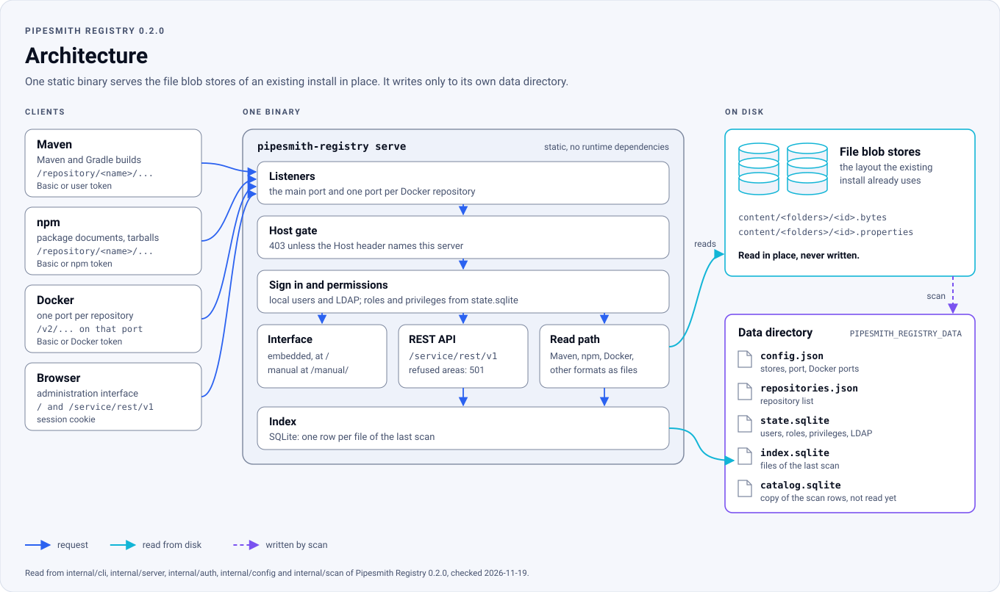
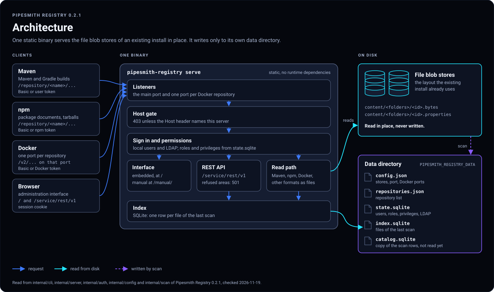
Formats
| Format | What this version serves |
|---|---|
| Maven | Files under /repository/<name>/. A group repository answers from its members in their order and merges maven-metadata.xml across them. |
| npm | Package documents and tarballs. Tarball URLs in a document point at this server. Group repositories merge the documents of their members. |
| Docker | The registry API for pulls (manifests, blobs, tags), and with writes on for pushes, under /v2/ on one port per Docker repository, and under /repository/<name>/v2/ on the main port. |
| Other formats | PyPI, raw and every other format: the stored files by their path. With writes on, raw takes PUT and DELETE by path. There is no other format logic for them in this version. |
Writes Off
Writes are off by default. Then a write to /repository/ (a deploy, npm publish, a Docker push) answers 401 without credentials. With credentials and the read permission of the repository it answers 405. The REST API refuses the operations it lists as not served with 501 and the area they belong to, after sign in. Other writes answer 405 or 404. With writes on, hosted repositories of Maven, npm, Docker and raw take writes (Writes). The chapter API lists the answers of each route. The interface marks the screens this version does not serve with "Not in preview".
First Run
A first run needs one machine, the binary and a folder of files. It shows the scan, the server answering a file and the pages in the browser, without an existing install and without sign in.
The commands call the binary as pipesmith-registry: download the file of your platform as Verify shows, give it that name, make it executable and put its folder on PATH. No command of a first run needs root. The paths below belong to an invented user dev.
Set the data directory once in the shell that runs the commands. The commands create it when it is missing.
export PIPESMITH_REGISTRY_DATA=/home/dev/pipesmith-dataA store of kind directory reads a plain tree. Each folder directly below its root is one repository with the name of the folder, and the files below it keep their paths. Files directly in the root and folders whose name starts with . are skipped. This folder holds two repositories with three files:
/home/dev/files/demo-raw/manuals/release-notes-2.4.txt
/home/dev/files/demo-raw/manuals/setup-2.4.txt
/home/dev/files/demo-tools/install.shAttach the folder, scan it and list the repositories:
pipesmith-registry store add files --kind directory --root /home/dev/files
added store files (directory, /home/dev/files)
next: scan files
pipesmith-registry scan
scan files: live=3 deleted=0 copies=0 no_bytes=0 unparsable=0 seconds=0.01
pipesmith-registry repos
NAME FORMAT TYPE ACCESS PORT FILES SIZE NEWEST NOTE
demo-raw unknown hosted files - 2 34 B 2026-11-19 04:10 no definition
demo-tools unknown hosted files - 1 23 B 2026-11-19 04:10 no definitionThe last line of the scan counts the three files as live. Without an import a repository has no definition. repos lists it as hosted, with the format the scan read from its paths, here unknown.
Start the server. It listens on 127.0.0.1 and the main port 8793. Without state.sqlite the log has no line about sign in:
pipesmith-registry serve
2026-11-19 05:11:03,481 INFO pipesmith_registry.listeners: listening on 127.0.0.1 port 8793In a second shell, download one file by its repository and path:
curl -s -O http://localhost:8793/repository/demo-raw/manuals/setup-2.4.txt
cat setup-2.4.txt
Setup guide 2.4The log of the server shows the request:
INFO: 127.0.0.1:50214 - "GET /repository/demo-raw/manuals/setup-2.4.txt HTTP/1.1" 200 OKOpen http://localhost:8793/ in a browser. Without state.sqlite it shows a page without sign in. The page counts stores, repositories, files and their size, lists the attached stores and the repositories, and opens the files of a repository in a browser panel. This manual stands at http://localhost:8793/manual/, the API page at http://localhost:8793/manual/api.html. Ctrl+C stops the server.
A first run shows no sign in, no interface and no Docker ports. Take Over sets them up from an existing install.
Take Over
Taking over puts Pipesmith Registry beside a running install. At the end a second server answers the same repository paths from the same files. The old service keeps running and keeps writing, and no step changes its stores or its database.
You need a shell on the host, read access to the blob store directories, and a copy of the database file of the old install. The export of that copy needs a machine with Docker and a checkout of this repository, and the Java image that tools/h2export.sh names must be on that machine. Without the database copy the server still serves files, but nobody signs in: a settings file gives it the repositories and no users.
Two things decide which clients can move. Maven, npm and Docker clients sign in with Basic credentials of local users and of LDAP users (Sign In). Builds that deploy need writing turned on (Writes); until then they keep using the old service.
The migration needs no downtime: the old service keeps taking uploads, and the next scan shows them here. Each step below writes into the data directory only.
| Step | Command | Writes |
|---|---|---|
| Attach | store add | config.json |
| Import | tools/h2export.sh, then import | an export folder, then state.sqlite and repositories.json |
| Docker Ports | config --docker-ports, repos port | config.json |
| Scan | scan | index.sqlite, catalog.sqlite |
| Start | serve | index.sqlite, only when it is missing |
| Compare | repos, store list, docker-check, curl | nothing |
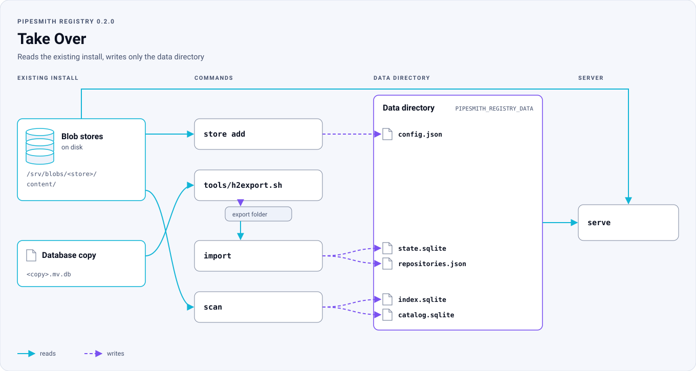
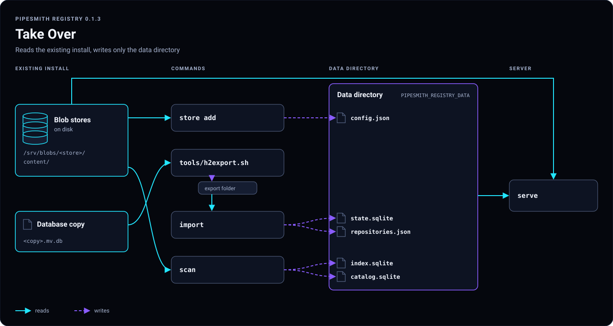
Run every command of this chapter as the service user, with PIPESMITH_REGISTRY_DATA set. Without the variable the binary uses the folder data in the parent of the folder that holds the binary. For the binary of Install, /opt/pipesmith-registry/pipesmith-registry, that is /opt/data. The commands write their files with mode 0600, so a file written by another user cannot be read by the service later.
sudo -u pipesmith-registry -s
export PIPESMITH_REGISTRY_DATA=/var/lib/pipesmith-registry
export PATH=/opt/pipesmith-registry:$PATHAttach
store add knows two kinds. One reads a file blob store in the layout of the existing install: its content/ folder holds a .properties file and a .bytes file per blob. pipesmith-registry store add --help prints the name of that kind. The other kind, directory, serves a plain tree with one folder per repository. Attach each blob store of the existing install once:
pipesmith-registry store add default --kind <blob store kind> --root /srv/blobs/defaultadded store default (<blob store kind>, /srv/blobs/default)
next: scan defaultGive each store the name the existing install uses for it. The blob store screen joins the imported definition and the attached store by that name. A definition without an attached store of the same name shows as unavailable there.
store add checks that the name starts with a letter or digit and holds only letters, digits, ., _ and -. It checks that no store of that name is attached and that the root exists as a directory. For a blob store the root needs a content/ folder:
error: /srv/blobs has no content/ directory, so it is not a file blob store
error: a store named default is attached alreadystore add reads nothing else and writes only config.json. The option --repos limits a directory store to the named folders. The option --manifest <path> gives a directory store the SHA-1, content type and creation time of its files. It reads a file or a directory of part-*.tsv files, plain or compressed as .gz or .zst. A .zst file needs the program zstd in an absolute entry of PATH; one that PATH finds only through a relative or empty entry is refused. Both options are refused for a blob store.
Without this step, the scan has nothing to read and stops with error: no stores attached; add one with: store add <name> --kind <kind> --root <path>.
Import
Users, roles, privileges, LDAP connections, realms, the anonymous setting, blob store definitions and repositories come from an export of the old database. The script tools/h2export.sh in a checkout of this repository makes that export from a copy of the database file. It runs the export program in a Java container and never pulls the image itself. When the image is missing, it stops and names the command that pulls it:
tools/h2export.sh: the image maven:3.9-eclipse-temurin-21@sha256:99e61abcff91a9b1333463bd8451fb18495d6eba9250ac66a338b518f8278320 is not on this machine; check df -h first (8 GiB free at least), then: docker pull maven:3.9-eclipse-temurin-21@sha256:99e61abcff91a9b1333463bd8451fb18495d6eba9250ac66a338b518f8278320The script also uses python3, curl and shasum. At its first run it fetches the database driver from Maven Central into a cache of the checkout, and it checks the checksum of the driver at every run. Run it on a copy, never on the database the old service has open:
tools/h2export.sh export --database-copy /backup/db-copy.mv.db \
--out work/export --set all --with-password-hashes
pipesmith-registry import work/exportThe copy must end in .mv.db. The output folder must lie below work/ or .tmp/ of the checkout and must not exist or be empty. The script gives it mode 0700 and its files 0600. --set takes content (blob stores and repositories), identity (users and everything about sign in) or all; without it the script exports content. Without --with-password-hashes the import still runs, but no local user can sign in. The script needs DOCKER_CONFIG set to a Docker configuration that asks for no credentials.
The export does not have to run on the host. Any machine with Docker, the checkout and the database copy can make it. Then carry the export folder to the host and give its path to import. With --with-password-hashes the folder holds the password hashes of the local users, so copy and store it with the same care as the database copy.
import checks the whole export against its manifest before it writes anything. A refused export writes nothing. Then it replaces, in state.sqlite, only the kinds of records the export holds, and writes repositories.json when the export holds repositories. An export with --set identity leaves the repositories alone. An export of the set content and one of the set identity, imported one after the other, printed:
imported set content from /srv/export-content
blob stores 4, repositories 6
replaced in /var/lib/pipesmith-registry/state.sqlite: blob_stores, repositories
wrote /var/lib/pipesmith-registry/repositories.json
note: the credentials of 2 repositories were removed; enter them again: demo-maven-proxy, demo-npm-proxy
imported set identity from /srv/export-identity
users 4 (4 with a password hash), role mappings 1, roles 5, privileges 6, LDAP servers 1, realms 4, anonymous access off
replaced in /var/lib/pipesmith-registry/state.sqlite: users, roles, privileges, ldap, realms, anonymous
note: LDAP bind passwords are never imported; give them at the start of serveThe import never takes over LDAP bind passwords or the credentials of proxy repositories. It does not read the stores, does not write config.json and does not attach a store. A second import of the same export replaces the same kinds again and writes repositories.json anew. A Docker port set with repos port stays, because it lives in config.json.
Without a database copy, a settings file gives the server its repositories. The settings file is the JSON list that GET /service/rest/v1/repositorySettings of the existing install returns. import-settings <file> writes repositories.json only. The server then has no sign in at all, and serve binds to local addresses only. import-state --settings <file> also writes the repositories into state.sqlite. Then sign in is on, but there are no users, so every protected route answers 401, and serve binds to local addresses only. The start log says so:
2026-11-19 13:59:22,635 INFO pipesmith_registry.security: security on: 0 local users, 0 of 0 LDAP connections, anonymous access off
2026-11-19 13:59:22,635 WARNING pipesmith_registry.security: nobody can sign in: add the first user with: pipesmith-registry user add <name> --roles <admin role>After import-state the realm of local users is not active, so a user added with user add cannot sign in yet. user add prints the realms set command that turns the realm on (Realms).
Without this step, serve still serves the scanned files, with no sign in and on a local address only. repos then shows each repository with the format the scan read from its paths and the note no definition, and groups do not exist.
Docker Ports
Each Docker repository with a port gets a listener of its own. The imported definitions carry the ports of the old service, and next to a running old service those ports are taken. serve opens every listener before it answers anything. If one port is taken, none of them stays open and serve stops:
error: [Errno 48] cannot listen on 127.0.0.1 port 14512: Address already in useThe number after Errno depends on the platform. List the Docker listeners of the next start, then give each Docker repository a free port:
pipesmith-registry config --docker-ports
14511 demo-docker
pipesmith-registry repos port demo-docker 14512
Docker port of demo-docker set to 14512 in /var/lib/pipesmith-registry/config.json
the change takes effect at the next start of the serverrepos port writes the port into config.json, where it wins over the port of the definition. It refuses a port that serve would refuse and ends the message with nothing changed. That is a port outside 1024 to 65535, the main port, the reserved port 8791, or a port of another repository. It does not test whether the port is free. It needs the repository from an import or a scan, so run it after the import.
error: Docker port 8791 of demo-docker is reserved on this machine; nothing changedrepos port <name> none removes the entry of config.json only. A repository whose definition has a port then gets that port again, so this command cannot leave such a repository without a listener:
removed the Docker port of demo-docker from /var/lib/pipesmith-registry/config.json; the port of the definition applies: 14511
the change takes effect at the next start of the serverScan
A scan reads every .properties file below content/ of the store and the size of each .bytes file. It skips content/tmp and content/directpath. Its time grows with the number of files. Run it at low priority when the old service serves from the same disk:
nice -n 19 ionice -c3 pipesmith-registry scan defaultThe last line of each store gives the counts and the seconds:
scan default: live=17 deleted=0 copies=0 no_bytes=0 unparsable=0 seconds=0.13live counts the files the server serves. deleted counts blobs marked deleted, copies blobs with an original location, no_bytes properties without a .bytes file. unparsable counts properties that are unreadable, larger than 1 MiB or not parsable. scan without a name scans every attached store, then the write store when it exists (Write Store). A store that fails prints error: scan <name> failed, the index keeps its previous rows: ..., the scan goes on with the next store and exits with code 1.
A second scan replaces the rows of that store with what the store holds now. A running server takes the new rows over at its next request. A store whose root or content/ looks empty while the index holds rows of it is refused, and the rows stay. The message asks you to check the mount or detach the store with store remove.
Without this step, the server starts with empty repositories, and docker-check stops with error: no index yet; attach a store and run: scan.
Start
serve makes these checks before it binds anything, and stops at the first that fails:
config.jsonand the port it holds.- The syntax of
--server-names. - A bind address other than a local one, which needs someone in
state.sqlitewho can sign in, and server names (see Network). - The port range and the reserved port 8791.
- The TLS certificate and key, when TLS is on (see TLS).
state.sqlite, migrated first when an earlier version wrote it (see Upgrade), and the LDAP connections.- With writes on, that
state.sqliteexists (see Writes). - The Docker ports.
Then it opens every listener.
pipesmith-registry serveThe main port is 8793 unless something else sets it (see Ports). The first lines of the log say how sign in started and which ports listen; Start Log shows them. Without a scan the server starts anyway: it creates an empty index.sqlite, every repository is empty, and no line warns about it. Without state.sqlite there is no sign in, no line about security, and only a local bind.
Compare
Both servers now answer the same repository paths. Compare the lists first, then a file:
pipesmith-registry repos
NAME FORMAT TYPE ACCESS PORT FILES SIZE NEWEST NOTE
demo-docker docker hosted docker 14512 5 2.3 kB 2023-11-14 22:13
demo-maven-group maven2 group maven - 0 0 B - members: demo-maven-proxy, demo-maven-hosted
demo-maven-hosted maven2 hosted maven - 12 2.1 kB 2026-10-05 14:13
demo-maven-proxy maven2 proxy maven - 0 0 B -
demo-npm-proxy npm proxy npm - 0 0 B -
demo-raw raw hosted files - 0 0 B -
pipesmith-registry store list
NAME KIND FILES SIZE ROOT
default <blob store kind> 17 4.4 kB /srv/blobs/default
pipesmith-registry docker-check demo-docker
demo-docker: 2 manifests read, 0 incomplete, 0 missing, 0 unreadableA repository with 0 files lives in a store that is not attached yet, or it is a group: a group counts only its own rows. docker-check reads every stored manifest of a Docker repository and names each blob or manifest it refers to that the index does not hold. Then fetch one file from each server and compare the bytes. <old port> is the port of the old service:
curl -s -u viewer -o old.jar http://localhost:<old port>/repository/demo-maven-hosted/com/example/billing/invoice-core/1.2.0/invoice-core-1.2.0.jar
curl -s -u viewer -o new.jar http://localhost:8793/repository/demo-maven-hosted/com/example/billing/invoice-core/1.2.0/invoice-core-1.2.0.jar
cmp old.jar new.jarconfig --check prints one line per problem of the configuration and nothing when there is none.
Install
An install puts the binary at /opt/pipesmith-registry/pipesmith-registry and creates a service user with the data directory /var/lib/pipesmith-registry. You need the release files of this version and root on the host. Each release on GitHub holds these files:
| File | What it is |
|---|---|
pipesmith-registry-linux-amd64, -linux-arm64, -darwin-arm64 | The binary for each platform, built with CGO_ENABLED=0. It needs no shared library and no runtime. |
SHA256SUMS | The SHA-256 of the three binaries, the two SBOM files, image.tar, and of the manual PDF where the release holds it. |
sbom.spdx.json, sbom.cdx.json | The software bill of materials of the source tree, in SPDX and CycloneDX. |
image.tar | The container image, as docker save writes it. |
pipesmith-registry-manual.pdf | This manual as a PDF. Releases up to 0.1.2 do not hold it. |
The release script can sign SHA256SUMS. A signed release also holds SHA256SUMS.sigstore.json and cosign.pub, and SHA256SUMS does not list them. The release notes name the files of each release.
Verify
Put the number of the release in place of <version>:
VERSION=<version>
BASE=https://github.com/iogentic/pipesmith-registry/releases/download/v$VERSION
curl -fLO "$BASE/pipesmith-registry-linux-amd64"
curl -fLO "$BASE/SHA256SUMS"
sha256sum --check --ignore-missing SHA256SUMSOn macOS the checksum command is shasum -a 256 --check --ignore-missing SHA256SUMS. The checksum shows that the download is complete; it does not show who built it.
Place
The released binary for linux-amd64 runs on a Linux host since version 0.1.1. The commands of this section have not been run as they stand here.
sudo install -d -m 0755 /opt/pipesmith-registry
sudo install -m 0755 pipesmith-registry-linux-amd64 /opt/pipesmith-registry/pipesmith-registry
sudo useradd --system --home-dir /var/lib/pipesmith-registry --shell /usr/sbin/nologin pipesmith-registry
sudo install -d -m 0700 -o pipesmith-registry /var/lib/pipesmith-registryWithout PIPESMITH_REGISTRY_DATA this binary would use /opt/data, the folder data beside /opt/pipesmith-registry. Set the variable to /var/lib/pipesmith-registry wherever the binary runs: in the shell of Take Over and in the unit of Service.
The service user needs read access to the blob store directories, usually through a group, and write access to its data directory only. Check the read access as that user before the first scan:
sudo -u pipesmith-registry ls /srv/blobs/default/contentCheck the binary with /opt/pipesmith-registry/pipesmith-registry version. It prints pipesmith-registry and the version.
Update Layout
update and rollback (Update) work on an install root in this layout. An install with the single binary of the section Place works as before. Only these two commands need the layout.
/opt/pipesmith-registry/
update.json
trusted.pub
releases/<version>/pipesmith-registry
current -> releases/<version>
previous -> releases/<version>current and previous are symbolic links with the relative target releases/<version>. <version> is the number that pipesmith-registry version prints, such as 0.1.3. previous appears with the first update. The install root and releases/ must belong to the user who runs update. update.json, the key and the folder of the key must belong to that user or to root. Neither group nor others may write any of them.
These commands ran in an Ubuntu 24.04 container with systemd and on a scratch install root on macOS. The change to the unit in step 4 has not been made on a host.
An install made by Place moves into the layout in four steps. Verify the binary of this version first, as Verify shows. A binary of 0.1.2 has no update command, so the first release in the layout is this version.
- Make the folders, put the binary in place and point
currentat it:sudo install -d -m 0755 /opt/pipesmith-registry/releases /opt/pipesmith-registry/releases/<version> sudo install -m 0755 pipesmith-registry-linux-amd64 /opt/pipesmith-registry/releases/<version>/pipesmith-registry sudo ln -s releases/<version> /opt/pipesmith-registry/current - Put the public key you trust at
/opt/pipesmith-registry/trusted.pub, mode0644. It is an ECDSA key on P-256 in one PEM blockPUBLIC KEY.updatereads the key from this file only. It refuses a key that lies in or below the release directory it checks, so it never takes thecosign.pubthat comes with a release. The project does not yet publish the key in a second place. You decide which copy you trust. - Write
/opt/pipesmith-registry/update.json, mode0644.data_diris required: a switch and arollbacknever take the data directory from the environment. A relativetrusted_keylies below the install root.{ "trusted_key": "trusted.pub", "data_dir": "/var/lib/pipesmith-registry" } - Point
ExecStartof the unit of Service at the link, restart the unit, and remove the old binary:ExecStart=/opt/pipesmith-registry/current/pipesmith-registry serve --port 8793 sudo systemctl daemon-reload sudo systemctl restart pipesmith-registry sudo rm /opt/pipesmith-registry/pipesmith-registry
Every command of this manual then calls /opt/pipesmith-registry/current/pipesmith-registry. Keep PIPESMITH_REGISTRY_DATA set: without it a binary below releases/<version>/ uses /opt/pipesmith-registry/releases/data.
Check the layout with a release directory that does not exist. update checks the owner, the modes, the key, data_dir and current, stops at the missing SHA256SUMS and changes nothing:
sudo /opt/pipesmith-registry/current/pipesmith-registry update /tmp/no-release
owner: uid of /opt/pipesmith-registry, lock taken
current: releases/<version>
error: SHA256SUMS missing: open /tmp/no-release: no such file or directoryOn an install without this layout, the same command stops with error: update configuration: cannot read /opt/pipesmith-registry/update.json and the cause.
Image
docker load -i image.tar loads the image and prints its tag. The release script gives it a build tag of the form pipesmith-registry-release:<process>-<time>. The release notes name the published image addresses. Container describes how to run it.
Source
The build runs in the Go container that tools/go.sh pins by digest. Docker must run, and DOCKER_CONFIG must name a configuration that asks for no credentials.
mkdir -p work/docker-quiet && printf '{}\n' > work/docker-quiet/config.json
export DOCKER_CONFIG="$PWD/work/docker-quiet"
tools/go.sh check
tools/go.sh buildcheck runs gofmt, go vet and the tests with the race detector. build writes the three binaries to bin/, with the content of VERSION as their version.
Sign In
After an import the imported users sign in with their old passwords, and LDAP users sign in once their connection can be built. You need state.sqlite from Import, made with --with-password-hashes. Without state.sqlite the server has no sign in: everybody who reaches it reads everything, and serve binds only to 127.0.0.1, localhost or ::1.
With state.sqlite sign in is on. Every route checks the caller, except /, /api/health, /api/status, /api/openapi.json, /service/rest/v1/status, /service/rest/v1/status/writable, /api/session, the files of the interface and the manual at /manual/. The token routes PUT /repository/<repository>/-/user/org.couchdb.user:<user>, GET /repository/<repository>/-/whoami, DELETE /repository/<repository>/-/user/token/<token> and GET /repository/<name>/v2/token pass without a sign in and check the credentials they are given (Tokens).
Local Users
A local user signs in when the user is active, the import carried a password hash, and the realm of local users is in the stored realm order. This version reads three stored forms: Shiro 1 hashes (SHA-512, SHA-384, SHA-256, SHA-1 or MD5), PBKDF2 (with HMAC SHA-1 or SHA-256), and unsalted hex SHA-1 or MD5. User ids match case sensitively. The interface and Basic credentials try the active realms in their stored order. Local users, the LDAP connections in their order, and user tokens as password (Tokens) each have a realm.
pipesmith-registry state show prints the imported records as JSON, without password hashes. Addresses in the repository attributes and the blob store paths appear without user and password.
LDAP
An LDAP connection comes from the import. It works when the LDAP realm is in the stored realm order and the connection can be built at start. A connection with the simple scheme needs its bind password. serve takes it from PIPESMITH_REGISTRY_LDAP_PASSWORD_<ID>, else from the file that ldap password <connection> writes below secrets/ of the data directory, else from the terminal with serve --ask-ldap-password. <ID> is the id of the connection in upper case, with every character other than an ASCII letter or digit as _. The id is the field id of ldapServers in state show, and the warning at start names the whole variable. An empty variable counts as unset.
--ask-ldap-password needs a terminal on standard input. It asks only for simple connections whose variable is not set, with the prompt bind password of LDAP connection <name>: . A connection with the scheme none needs no password. The schemes Digest-MD5 and CRAM-MD5 are refused (the scheme ... is not built in this version).
A connection that cannot be built is left out: the server does not use it, writes a warning that names the reason, and the local users still sign in. Reasons are a missing bind password, a refused scheme or a protocol other than ldap or ldaps. A missing host or search base, a bad port and a bad DN, filter or group setting leave a connection out as well. A connection with protocol ldap and the simple scheme gets a warning at start, because it sends the bind password in clear. ldaps checks the certificate of the directory against the system roots, with TLS 1.2 at least, and has no option to skip that check.
Basic Authentication
Maven, npm and Docker send Basic credentials. The server checks them against the same realms in the same order as a sign in of the interface, so LDAP users sign in with their LDAP password. It keeps a successful check for 300 seconds, at most 10,000 of them, and answers the same user name and password from memory in that time. An entry holds no password and no hash: its key is an HMAC-SHA-256 under a random value of the process. Each change of state.sqlite and each restart empties the cache.
Anonymous Access
The anonymous setting comes from the import, or from anonymous on and anonymous off (Commands). When it is on, a caller without credentials reads with the permissions of the anonymous user. That covers the files below /repository/, the listings below /service/rest/repository/browse/, and the Docker paths of a repository that sends a Bearer challenge (Docker Login). Every other protected route answers 401 without credentials, also with anonymous access on.
Throttle
Failed sign ins count per pair of lower case user name and client address. After 5 failures the pair waits 2 seconds, and each further failure doubles the wait, up to 15 minutes. A success clears the pair, and a pair is forgotten 15 minutes after its last failure. A pair that waits gets 429 with Retry-After. There is no limit per address alone, because behind a tunnel every user comes from 127.0.0.1. Behind a proxy of trusted_proxies the client address comes from X-Forwarded-For (Reverse Proxy). A pair also counts its sign ins in flight. When they and its failures add up to 5, a further request with Basic credentials waits up to 2 seconds for a place and then gets 429 with Retry-After: 2. A sign in of the interface and npm login get that 429 at once.
Sessions
The interface signs in with POST /api/session and then sends the cookie pipesmith_session. A session ends after 30 minutes without a request and after 12 hours at most. A user has at most 20 sessions; a new one ends the oldest. Sessions live in memory, so a restart signs everybody out. The cookie is HttpOnly and SameSite=Strict. It gets Secure on a TLS connection, and behind a proxy of trusted_proxies that sends X-Forwarded-Proto: https.
Start Log
The log goes to standard error. Every line of it carries date, time, level and logger. The start of a server with four imported users and an LDAP connection without its password printed:
2026-11-19 13:52:28,818 WARNING pipesmith_registry.security: LDAP connection demo-directory left out: ldapauth: connection setting refused: connection "demo-directory": the simple scheme needs a bind password: set PIPESMITH_REGISTRY_LDAP_PASSWORD_6F1C2A52_0000_4000_8000_000000000001 or enter it at start; or write it with: pipesmith-registry ldap password demo-directory
2026-11-19 13:52:28,819 WARNING pipesmith_registry.security: stored privileges that grant nothing: type=repository-content-selector count=1
2026-11-19 13:52:28,819 INFO pipesmith_registry.security: security on: 4 local users, 0 of 1 LDAP connections, anonymous access off
2026-11-19 13:52:28,858 INFO pipesmith_registry.listeners: listening on 127.0.0.1 port 8793
2026-11-19 13:52:28,858 INFO pipesmith_registry.listeners: Docker repository demo-docker listening on 127.0.0.1 port 14512The line security on counts the local users, the LDAP connections in use against the imported ones, and the anonymous setting. Without state.sqlite it is missing. Each request then writes one access line, for example INFO: 127.0.0.1:63027 - "GET /repository/demo-maven-hosted/com/example/billing/invoice-core/1.2.0/invoice-core-1.2.0.pom HTTP/1.1" 200 OK.
Writes
With writes on, clients deploy, publish, push and upload to the hosted repositories of this server. The files go into the write store in the data directory (Write Store). You need state.sqlite with the users who may write (Import) and free space on the disk of the data directory. Hosted repositories of Maven, npm, Docker and raw take writes. Deploy, Publish, Push and Upload show one request for each. The REST API takes uploads and deletes as well; API marks those operations "needs state.sqlite and writes".
Turn On
Three settings turn writes on. serve takes the first one that is set:
| Order | Setting | Values |
|---|---|---|
| 1 | serve --writes | On. The option cannot turn writes off. |
| 2 | PIPESMITH_REGISTRY_WRITES | 1, true, on or yes for on, 0, false, off or no for off, in any case. Unset or empty leaves it to config.json. |
| 3 | "writes": true in config.json | true or false. Off when the key is missing. |
pipesmith-registry serve --writesAfter the listening on lines the log names the write store. With writes off, the log has no line about writes.
2026-11-19 13:52:28,858 INFO pipesmith_registry.server: writes on: new blobs go into store local-write at /var/lib/pipesmith-registry/stores/local-writeWith writes on, serve stops with exit code 1 in these cases. It makes the first two checks before any listener opens, and the last two after the listeners are open and before the first request.
| Case | Message |
|---|---|
The data directory holds no state.sqlite | error: writes need state.sqlite with the users who may write; import them first (import), then start with writes on |
| The variable holds another word | error: PIPESMITH_REGISTRY_WRITES is neither on nor off: 'maybe' |
config.json attaches a store named local-write | error: store local-write of /var/lib/pipesmith-registry/config.json has the name of the write store of this server; remove it before writes are switched on |
Another process holds the write store: maven rebuild-metadata, or a second serve with writes on that listens on other ports | error: store local-write has another writer: /var/lib/pipesmith-registry/stores/local-write/content/tmp is locked |
Check that the write store takes writes. The route needs no sign in:
curl -s -o /dev/null -w '%{http_code}\n' http://localhost:8793/service/rest/v1/status/writable
200It answers 503 with writes off, and also with writes on while the write store cannot take a write, for example when one of its folders cannot be written.
Write Store
Every write goes into stores/local-write of the data directory, in the layout of a file blob store. The server never writes to the stores of the existing install. serve creates the folder at its first start with writes on:
Path below stores/local-write | Holds |
|---|---|
metadata.properties | type=file/1 |
content/<yyyy>/<MM>/<dd>/<HH>/<mm>/ | One .bytes and one .properties file per blob, in the folder of the minute in UTC. The properties name the path, the repository, the user and the client address. |
content/tmp/ | Uploads in progress and the lock of the writer |
reconciliation/<yyyy-MM-dd> | The blobs written on that day |
Folders get mode 0750, files 0600. The index row of a written file is in place before the client gets its answer, so the server serves the file at once. A delete marks the blob deleted in its .properties file and removes no file. A delete answers 409 when a store of the existing install holds the file.
A start with writes off attaches an existing write store read only, so files written earlier are still served. scan scans the write store after the attached stores, and scan local-write scans it alone. store list does not list it.
scan local-write: live=4 deleted=2 copies=0 no_bytes=0 unparsable=0 seconds=0.03Permissions
A write needs the view permission of the repository with one action. DELETE needs delete. PUT, POST and PATCH need add for a path the repository does not hold and edit for one it holds. Some npm and Docker requests change a stored path other than the one they name. They need the action of that path. Reads need read, as with writes off.
While writes are on, a write without credentials answers 401 with the challenge, even when anonymous access is on. A user without the action gets 403:
curl -s -u viewer -T setup-2.5.txt http://localhost:8793/repository/demo-raw/manuals/setup-2.6.txt
requested access to the resource is deniedA write with the session cookie of the interface needs the request token in X-Pipesmith-Csrf. Basic credentials and tokens need none. A write that a browser page of another origin sends answers 403 with a write that a page of another origin sends is refused. The server compares the Origin header with its own scheme and Host, and reads Sec-Fetch-Site.
Refusals
Each hosted repository keeps the policies of the existing install, from the import. The write policy ALLOW takes every write. ALLOW_ONCE takes a path once. The exceptions are maven-metadata.xml with its checksum files, and the Docker tag latest in a repository whose attribute storage.latestPolicy is true. DENY, an empty or an unknown policy refuses every write. No command changes a policy. Below /repository/ a refusal is plain text. On npm paths it is {"error":"..."}, and on Docker paths it is the error form of the Docker registry API.
| Status | Message | Cause |
|---|---|---|
401 | Authentication required | No credentials, or wrong ones. |
403 | requested access to the resource is denied | The user lacks add, edit or delete on the repository. |
405 | Method not allowed: this server is read only | Writes are off, or the repository is a group, a proxy, offline or of another format than Maven, npm, Docker and raw. |
400 | the repository does not allow updating assets | ALLOW_ONCE, and the path exists: a redeploy, a second publish of a version, a tag pushed again with other bytes. |
400 | the repository is read only | The write policy is DENY, empty or unknown. A Docker path answers 405 with this message. |
400 | the repository takes release versions only, not 1.4.0-SNAPSHOT | The Maven version policy RELEASE. SNAPSHOT refuses releases the same way. |
400 | notes.txt is not a path of the Maven repository layout | The Maven layout policy STRICT. |
400 | the content of invoice-core-1.3.1.jar does not match its extension | The strict content type validation of the repository. |
409 | <path> of repository <name> lies in store <store>, which is read only | A delete of a file of the existing install. |
413 | the body is larger than the limit of <n> bytes of repository <name> | The body is over the limit of the repository, 10 GiB unless the repository sets another. |
503 | the index is busy, a scan may hold it; nothing is stored, send the write again | A scan holds the index. The answer carries Retry-After: 10. |
507 | store local-write has <n> bytes free; the write needs <m> with the free space it must leave | The disk would keep less than 2 GiB free after the write, unless the repository sets another floor. |
Service
As a service, systemd starts the server at boot, restarts it after a failure and keeps its log in the journal. You need the binary and the data directory of Install, and a data directory filled by Take Over.
serve speaks the notify protocol of systemd. It sends READY=1 once every listener is open, WATCHDOG=1 at half of WatchdogSec, and STOPPING=1 when it stops. SIGTERM and SIGINT stop it. Open requests get the seconds of PIPESMITH_REGISTRY_DRAIN, 1 to 3600, and 5 when it is unset. Then a running scan gets up to 10 seconds to stop, so a stop with the default can take about 15 seconds. The log goes to standard error, so the journal keeps it.
This unit file has not run on a Linux host yet. The binary runs there under systemd as a transient unit started with systemd-run, with the file system read only apart from the data directory and a service user of its own. The notify protocol is covered by tests on a Unix socket.
Save the unit as /etc/systemd/system/pipesmith-registry.service:
[Unit]
Description=Pipesmith Registry
After=network-online.target
Wants=network-online.target
[Service]
Type=notify
WatchdogSec=30
User=pipesmith-registry
Environment=PIPESMITH_REGISTRY_DATA=/var/lib/pipesmith-registry
EnvironmentFile=-/etc/pipesmith-registry/ldap.env
ExecStart=/opt/pipesmith-registry/pipesmith-registry serve --port 8793
ReadOnlyPaths=/srv/blobs
ReadWritePaths=/var/lib/pipesmith-registry
ProtectSystem=strict
ProtectHome=yes
PrivateTmp=yes
NoNewPrivileges=yes
Restart=on-failure
[Install]
WantedBy=multi-user.target/etc/pipesmith-registry/ldap.env holds one line per LDAP connection, PIPESMITH_REGISTRY_LDAP_PASSWORD_<ID>=..., owned by root with mode 0600. ldap password <connection> writes a bind password into the data directory instead, and the variable wins over that file. serve sends nothing to systemd when NOTIFY_SOCKET is not set. A failed message to systemd is a warning in the log and does not stop the server.
sudo systemctl daemon-reload
sudo systemctl enable --now pipesmith-registryCheck the service with:
systemctl status pipesmith-registry
curl -s http://localhost:8793/api/health/api/health answers {"status":"ok"}.
Fresh Content
While the old service keeps writing to its stores, the index shows the state of the last scan. Run scan <name> again, from a timer or by hand, as the service user with the data directory set. On a local file system the server answers from the last finished scan while a scan runs. A user with every permission can also start a scan through the server with POST /api/scan:
curl -s -u admin -X POST -H 'X-Artifact-Repository: 1' \
-H 'Content-Type: application/json' \
-d '{"store": "default"}' http://localhost:8793/api/scanIt answers 202 with the state of the scan, 409 while a scan runs, 404 for a store that is not attached, and 413 for a body over 64 KiB. The request needs the header X-Artifact-Repository: 1 and a Host header with the main port, such as localhost:8793. An Origin header, when sent, must be http:// plus such a host. GET /api/status shows the running scan and the result of the last one.
Network
Clients on other machines reach the server by name once it binds to a network address. You need a user in state.sqlite who can sign in, and the names under which clients reach the server. By default serve binds to 127.0.0.1.
pipesmith-registry serve --bind 0.0.0.0 --port 8793 \
--server-names registry.example.com,10.0.0.12A bind to a network address runs on a Linux host since version 0.1.1, on the main port and on one port per Docker repository, over plain HTTP. Its refusals and the Host gate are covered by tests.
An address other than 127.0.0.1, localhost or ::1 needs someone in state.sqlite who can sign in. That is an active local user with a password while the realm of local users is active, or an LDAP connection while the LDAP realm is active. Otherwise serve stops:
error: bind address '0.0.0.0' is not local; only 127.0.0.1, localhost, ::1 are allowed until users are imported (import) or added (user add), or an LDAP connection is imported, with its realm active (realms set), then with --server-names NAME[,NAME]With such a user and without names it stops with:
error: bind address '0.0.0.0' is not local; name this server with --server-names NAME[,NAME]Names are DNS names or IP addresses, separated by commas, an IPv6 address with or without brackets. The server stores them in lower case and refuses anything else with host name '...' is not a DNS name or an IP address. An address with a : binds IPv6 only. The Docker listeners bind the same address as the main port. config.json may hold a local bind only, so a network bind is always a flag of serve.
Host Gate
Every request whose Host header does not name localhost, 127.0.0.1, [::1] or one of the server names gets 403 with the text Forbidden: the Host header does not name this server. The port in the header does not count. The names also apply to a local bind.
TLS
With TLS on, every listener speaks HTTPS: the main port and the port of every Docker repository. You need a certificate and its private key as PEM files that the service user can read. Give both to serve, or set tls_cert and tls_key in config.json; an option wins over its key.
pipesmith-registry serve --bind 0.0.0.0 --port 8793 \
--server-names registry.example.com \
--tls-cert /etc/pipesmith-registry/tls/cert.pem \
--tls-key /etc/pipesmith-registry/tls/key.pemThe listeners take TLS 1.2 or newer and HTTP/1.1 only, with one certificate for all of them. serve reads both files once at start, so a renewed certificate takes effect at the next start. The log names the certificate before the listening on lines:
2026-11-19 13:55:09,188 INFO pipesmith_registry.listeners: TLS on every listener with the certificate /etc/pipesmith-registry/tls/cert.pem
2026-11-19 13:55:09,195 INFO pipesmith_registry.listeners: listening on 0.0.0.0 port 8793
2026-11-19 13:55:09,195 INFO pipesmith_registry.listeners: Docker repository demo-docker listening on 0.0.0.0 port 14512Check it with the certificate that signed the server certificate. In this example that is the server certificate itself:
curl -s --cacert /etc/pipesmith-registry/tls/cert.pem https://registry.example.com:8793/api/health
{"status":"ok"}Over TLS the session cookie gets Secure. The addresses the server builds start with https://: npm tarball addresses, the url fields of the REST API and the realm of a Docker challenge. A plain HTTP request to a TLS port gets no answer, and curl reports Empty reply from server.
serve stops with exit code 1 when only one of the two files is given, or when it cannot read them as a pair:
error: TLS needs a certificate and a key: give --tls-cert and --tls-key, or tls_cert and tls_key in config.json
error: TLS certificate /etc/pipesmith-registry/tls/cert.pem with key /etc/pipesmith-registry/tls/key.pem: open /etc/pipesmith-registry/tls/key.pem: no such file or directoryA network bind without TLS writes a warning at every start:
2026-11-19 13:55:18,362 WARNING pipesmith_registry.security: bind address 0.0.0.0 is not local and TLS is off: Basic credentials and session cookies cross the network in clear text; give --tls-cert and --tls-key, or bind to loopback behind a reverse proxy on this host that ends TLSPlain HTTP
Without TLS, passwords travel in clear between client and server. TLS on the server keeps them off the network (TLS). Without it, an SSH tunnel or a reverse proxy does:
- An SSH tunnel from each workstation:
ssh -N -L 8793:localhost:8793 user@registry.example.com, plus one more-Lper Docker port. Then the server islocalhostfor browser and clients. - A reverse proxy on the same host that ends TLS and forwards to
127.0.0.1(Reverse Proxy). Add the public name to--server-names, because the proxy passes theHostheader on.
Reverse Proxy
The server has not run behind a TLS proxy on a host yet.
Behind a reverse proxy every request comes from the address of the proxy. Two settings decide which forwarded headers count, and from which peers:
| Setting | trusted_proxies | FORWARDED_ALLOW_IPS |
|---|---|---|
| Set in | config.json, a list of strings | the environment, comma separated, read once at start |
| Default | empty: no peer, not even loopback | 127.0.0.1,::1 |
| An entry | an IP address or a network such as 10.0.0.0/24; names and * are refused | an IP address or a network; * trusts every peer, an empty value none |
| Decides | the client address of the sign in throttle, and with X-Forwarded-Proto: https the Secure of the session cookie and https in the addresses the server builds | the client of the access log and the scheme of the addresses the server builds |
No command and no option sets trusted_proxies. Add it to config.json of the data directory as the service user, then start the server again. The log names the proxies:
"trusted_proxies": ["127.0.0.1", "::1"]
2026-11-19 13:58:42,872 INFO pipesmith_registry.security: forwarded headers count from the trusted proxies 127.0.0.1, ::1serve stops at an entry that is not an address or a network, and config --check prints the same text without error::
error: /var/lib/pipesmith-registry/config.json: trusted_proxies: 'proxy.example.com' is not an IP address or a network in CIDR formFrom a trusted proxy the server reads X-Forwarded-For from the right: the first entry that is not a trusted proxy is the client. When it meets an entry that is not a bare IP address, or every entry is a trusted proxy, the server uses the address of the connection. Forwarded, X-Forwarded-Host and X-Real-Ip decide nothing. The Host gate reads the Host header that the proxy passes on, so the public name belongs in --server-names.
With state.sqlite, a request with forwarded headers from a peer that is no trusted proxy writes a warning, at most once per peer in 10 minutes:
2026-11-19 13:58:42,678 WARNING pipesmith_registry.security: forwarded headers from 127.0.0.1, which is no trusted proxy: the sign in limits and the session cookie take the address of the connection. If 127.0.0.1 is a reverse proxy, list it in trusted_proxies of config.jsonPOST /api/scan through a proxy on port 443 fails its Host check, which wants the main port. An https:// origin fails as well. Start scans on the host with scan.
Container
The server runs in a container with its data on a Docker volume and the stores mounted read only. You need the image of Install or a published address of the release notes, an export for the import, and the blob store directories on the Docker host.
The image holds the binary at /usr/local/bin/pipesmith-registry on a distroless static base without a shell. It runs as user 65532, sets PIPESMITH_REGISTRY_DATA=/data, and creates /data owned by that user, so a new named volume on /data is writable. Its entry point is the binary, and its default command is serve. It declares no port and no volume. The image has not been run against a blob store yet.
IMAGE=iogentic/pipesmith-registry:<version>
docker volume create pipesmith-data
docker run --rm -v pipesmith-data:/data \
-v /srv/blobs/default:/stores/default:ro "$IMAGE" \
store add default --kind <blob store kind> --root /stores/default
docker run --rm -v pipesmith-data:/data \
-v "$PWD/export:/import:ro" "$IMAGE" import /import
docker run --rm -v pipesmith-data:/data \
-v /srv/blobs/default:/stores/default:ro "$IMAGE" scan
docker run -d --name pipesmith-registry \
-p 127.0.0.1:8081:8081 -p 127.0.0.1:14512:14512 \
-v pipesmith-data:/data -v /srv/blobs/default:/stores/default:ro "$IMAGE" \
serve --port 8081 --bind 0.0.0.0 --server-names localhostserve without options binds to 127.0.0.1 inside the container, which cannot be reached from outside. The bind address 0.0.0.0, which -p needs, works only when state.sqlite on the volume holds a user who can sign in, and with --server-names. Publish each Docker port with one more -p; docker run ... config --docker-ports lists them. The root of the store inside the container is /stores/default, so the mounts of every run must be the same.
On a Docker volume, serve answers from the last finished scan while a docker run ... scan runs beside it. A data directory on a Docker Desktop share from macOS or Windows, on NFS, SMB or FUSE loses index writes when two processes use it at once. Measured: a scan and a server that started and stopped during it left the index without the tables of the scan. On Linux scan and serve print a warning on such a file system. <kind> is fakeowner for a Docker Desktop share, or fuse, nfs, smb, smb2, cifs:
warning: the data directory <dir> lies on a <kind> file system; two processes that use the index there at the same time can lose its writes. Run one process on it and start scans through the server (POST /api/scan), or put the data directory on a local Linux file system such as a Docker volume.Check the container with docker logs pipesmith-registry and curl -s http://localhost:8081/api/health.
Upgrade
A new binary serves the data directory of the version before it. You need the release files of the new version.
An install of an earlier version becomes this version with the new binary: verify the download, stop the service, replace the binary, start it again. In a container, run the image of the new version on the same /data volume. This version uses config.json, repositories.json and index.sqlite of the versions before it as they are, and migrates state.sqlite (State Schema). An install in the layout of Update Layout moves to a newer version with update and back with rollback (Update).
A data directory of an earlier version has no catalog.sqlite. The first scan after the upgrade creates it with mode 0600. While a scan runs it also writes a staging folder catalog.sqlite.fill-<random> beside it and removes it at the end. Until that scan the server answers as before.
When the import of 0.1.1 stopped at an LDAP row or a blob store, run import on the export again before the start. Do the same when config --docker-ports does not list a Docker repository that has a port in the old service. After that import serve opens a listener on that port as well. It stops with Address already in use while the old service on the same host holds the port. Move the port before the start with repos port <name> <port>, as Docker Ports shows.
State Schema
This version keeps state.sqlite in schema 2, with a table of tokens. Releases up to 0.1.2 write schema 1. The first command of this version that opens a file of schema 1 migrates it. serve and state show are such commands. Before the first step it writes a copy of the old file beside it, state.sqlite.v1, mode 0600. Do not run a command of this version on the data directory of a running earlier server.
pipesmith-registry state show
{
"schema": 2,
"path": "/var/lib/pipesmith-registry/state.sqlite",
...The command never replaces a copy that exists. When state.sqlite.v1 is still there at a later migration, it stops:
error: the copy /var/lib/pipesmith-registry/state.sqlite.v1 exists, from an earlier migration of /var/lib/pipesmith-registry/state.sqlite or from another process that migrates it now; move the copy away while no other process uses the file, then start againAn earlier binary refuses a file of schema 2 with <file> has schema 2, this binary knows schema 1. To go back to it:
- Stop the server of this version.
- Move
state.sqlite,state.sqlite-walandstate.sqlite-shmout of the data directory. - Rename
state.sqlite.v1tostate.sqlite. - Put the earlier binary back and start it.
Users, roles, realms and tokens changed after the upgrade are then lost. The copy is the file of the earlier version as it was, so the earlier binary opens it without a migration.
Back Out
The blob stores are only read, so removing Pipesmith Registry leaves the existing install as it was. With writes on, the data directory holds the files clients wrote to this server, in stores/local-write. Copy that folder before you remove the data directory:
sudo systemctl disable --now pipesmith-registry
sudo rm -rf /opt/pipesmith-registry /var/lib/pipesmith-registry /etc/pipesmith-registryWhen the timer of Timer was enabled, stop it first with sudo systemctl disable --now pipesmith-registry-update.timer.
Update
An update installs a signed release of a newer version next to the running one, points current at it, restarts the unit and keeps the previous release for rollback. You need the install root of Update Layout, the unit of Service under systemd, and a shell as the owner of the install root. For /opt/pipesmith-registry the owner is root.
update and rollback have run in an Ubuntu 24.04 container with systemd and without network. The fetch stage has run only against a local stub of the package registry. The health wait over TLS has run in Go tests only. No update has run on a host.
Release Directory
Download the binary of the platform, SHA256SUMS and SHA256SUMS.sigstore.json into an empty folder, as Verify shows, and give the folder to update:
sudo /opt/pipesmith-registry/current/pipesmith-registry update /tmp/releaseupdate prints one line per finished step, with the name of the step first, such as checked:, installed:, switched:, restarted: and healthy:. A refusal prints error: <text> and exits with 1.
The published SHA256SUMS of 0.1.2 lists three names twice. update refuses a name that is listed twice, so it cannot install 0.1.2.
Checks
update checks in this order before it switches the links:
- The owner and the modes of the install root,
releases/,update.jsonand the key. Then it takes a lock on the install root. data_dirofupdate.jsonand the linkcurrent.- The signature in
SHA256SUMS.sigstore.jsonoverSHA256SUMS, with the key oftrusted_key. - The SHA-256 of
pipesmith-registry-<os>-<arch>of this machine against its line inSHA256SUMS. - The answer of the new binary to
version, run once without a shell and with an empty environment. It must be higher than the version ofcurrent;--allow-downgradelifts this rule. - The answer of the new binary to
schemaagainststate.sqliteandcatalog.sqliteofdata_dir. A data file with a newer schema than the release writes is refused. - Free space for the copies of the files that migrate: the size of
state.sqliteand twice the size ofcatalog.sqlite. A copy<file>.v<n>or<file>.failedleft from an earlier run is refused.
From step 5 on it works on a copy of the binary in a folder releases/.staging-<random>, which it removes afterwards. When every check has passed, it writes releases/<version>/ with the binary, SHA256SUMS and SHA256SUMS.sigstore.json.
Restart
update points previous at the running release and current at the new one. For each link it renames a new link into place. It runs systemctl restart on the unit pipesmith-registry.service, or on unit of update.json. The restart may take drain_seconds of update.json plus 120 seconds, and 3720 seconds without that key. Give drain_seconds the value of PIPESMITH_REGISTRY_DRAIN of the unit.
Then it asks the new version every 500 milliseconds, for 30 seconds: GET /api/health must answer {"status":"ok"}, and GET /api/status must name the new version. It sends these requests to the bind address of config.json of data_dir, 127.0.0.1 by default. The port is PIPESMITH_REGISTRY_PORT of its own environment when that is set, else the port of config.json, else 8793. It does not see serve --port. A unit that listens elsewhere needs health_address (host:port) in update.json. When config.json names tls_cert and tls_key, the wait speaks TLS and accepts only that certificate.
Check the result:
readlink /opt/pipesmith-registry/current
curl -s http://localhost:8793/api/statuscurrent names releases/<version>, and /api/status names that version.
Way Back
When the restart or the health wait fails, update points both links back, restarts the previous release and waits for it again. It removes the release folder it made in this run and exits with 1. The message says went back to releases/<old>, which answers again, or which does not answer either with the cause.
When the new release migrated a data file, update first stops the unit. It keeps the migrated file as <file>.failed, renames the copy <file>.v<n> back to <file> and starts the previous release. A file that the new release removed comes back from its copy. Without a copy the message says <file> is gone, and the previous release starts without it. Changes made after the restart are lost.
A file that was migrated without a copy stays as it is, as after --no-catalog-backup. Then the unit stays stopped and the release folder stays. The message says then the way back stopped and the reason.
Rollback
sudo /opt/pipesmith-registry/current/pipesmith-registry rollbackrollback points current at the release of previous and previous at the release that ran, restarts the unit and waits for its health as update does. When the restart or the health wait fails, it points the links back in the same way. A second rollback returns to the first release. It changes no data file, puts no copy back and checks no signature. It refuses before any change when a data file has a newer schema than the previous release writes, and its message names the copy if one exists. Putting that copy back by hand loses every change made since the update.
Fetch Stage
update --fetch downloads a release from the generic package registry of a Forgejo server into releases/<version>/ and checks it. It restarts nothing. update --switch <version> then installs that folder as a release directory. update.json names the server and the owner of the package:
"channel": {
"server": "https://registry.example.com",
"owner": "demo",
"token_file": "forge"
}server needs https. Plain http is allowed only to a loopback address. token_file is optional: a file name below secrets/ of data_dir, which neither group nor others may read. Without --version the stage takes the highest version above the running one whose cosign.pub answers 200. It checks the signature, the SHA-256 of the binary, the bill of materials sbom.cdx.json and the answer of the binary to version. A failed step removes releases/<version>.partial/.
The health wait asks the registry itself. The fetch stage is the only part that asks another host, and nothing is sent unless an operator runs update --fetch or turns the timer on. All requests are GET to server: the version list /api/v1/packages/<owner>?limit=50&page=<n>&q=pipesmith-registry&type=generic, then cosign.pub, SHA256SUMS, SHA256SUMS.sigstore.json, the binary and sbom.cdx.json below /api/packages/<owner>/generic/pipesmith-registry/v<version>/. No request names the running version, the host or a repository. The token goes in Authorization to server only. The client uses no proxy and follows at most 3 redirects, each to the same scheme, host and port.
Timer
The folder release/ of the source repository holds pipesmith-registry.service, pipesmith-registry-update.service and pipesmith-registry-update.timer. A release does not carry them, and no command installs or enables them. The timer runs update --fetch --scheduled once a day as root, within a random delay of up to one hour. It switches to the fetched version only when scheduled_switch of update.json is true; without that key it only fetches. Copy the three files from the source repository to /etc/systemd/system/, then:
sudo systemctl daemon-reload
sudo systemctl enable --now pipesmith-registry-update.timerupdate and rollback restart a systemd unit, so they do not apply to Container.
Maven
Maven resolves its dependencies through a group repository of this server. You need a local or LDAP user with the read permission of the repositories. The examples use an SSH tunnel, so the server is localhost:8793.
The script tests/clients/run_clients.py of this repository runs Maven, Gradle, npm, crane and skopeo against a server, each in a container. For its reads that server has repositories from a settings file and no state.sqlite, so no client signs in. For its writes a second server runs with writes on and sign in on. Maven deploys with Basic credentials. npm publishes with the token of npm login. crane, skopeo and the Docker engine push after crane auth login, skopeo login and docker login. The settings in this chapter and in npm, Docker and Tokens have not been run as shown.
In ~/.m2/settings.xml, a mirror on a Maven group and a server entry with the same id:
<settings>
<mirrors>
<mirror>
<id>pipesmith</id>
<mirrorOf>*</mirrorOf>
<url>http://localhost:8793/repository/demo-maven-group/</url>
</mirror>
</mirrors>
<servers>
<server>
<id>pipesmith</id>
<username>viewer</username>
<password>${env.REGISTRY_PASSWORD}</password>
</server>
</servers>
</settings>A group answers from its members, groups inside it included, in their order and each member once. A file comes from the first member that holds it. maven-metadata.xml and its checksums are merged from every member that has one: the versions of all members, the newest latest and release, the greatest lastUpdated. A .sha1 file that no member stores is answered from the SHA-1 of the indexed file. A member document over 16 MiB is skipped. A member document also counts as not well formed when its entities expand past 8 MiB or its elements nest deeper than 1,102. The same holds for more than 200,000 elements or 200,000 attributes. The group merges the other members, and with no document left the path answers 404. Check one file with:
curl -sI -u viewer http://localhost:8793/repository/demo-maven-hosted/com/example/billing/invoice-core/1.2.0/invoice-core-1.2.0.jar
HTTP/1.1 200 OK
Accept-Ranges: bytes
Content-Length: 201
Content-Type: application/java-archive
Etag: "7959e4804e01a1b5dd21413e0304dfdd5be91574"
Last-Modified: Mon, 05 Oct 2026 14:13:20 GMTWith writes off a deploy answers 401 without credentials. With the credentials of a user who may read the repository it answers 405:
HTTP/1.1 405 Method Not Allowed
Allow: GET, HEAD
Content-Type: text/plain; charset=utf-8
Method not allowed: this server is read onlyDeploy
With writes on, mvn deploy stores the files of a build in a hosted maven2 repository. You need a user with add on it, and edit to write a path again. Add this to pom.xml. The credentials come from the server entry pipesmith of settings.xml:
<distributionManagement>
<repository>
<id>pipesmith</id>
<url>http://localhost:8793/repository/demo-maven-hosted/</url>
</repository>
</distributionManagement>A deploy is one PUT per file, checksum files and maven-metadata.xml included, and each answers 201. The server stores every file as the client sends it and writes no maven-metadata.xml itself. A checksum file that does not match its file is stored, and the log gets a warning. The same with curl:
curl -s -u admin -T invoice-core-1.3.0.jar -o /dev/null -w '%{http_code}\n' \
http://localhost:8793/repository/demo-maven-hosted/com/example/billing/invoice-core/1.3.0/invoice-core-1.3.0.jar
201demo-maven-hosted has the write policy ALLOW_ONCE and the version policy RELEASE, so a second deploy of the jar and a snapshot are refused:
HTTP/1.1 400 Bad Request
Content-Type: text/plain; charset=utf-8
the repository does not allow updating assets
HTTP/1.1 400 Bad Request
Content-Type: text/plain; charset=utf-8
the repository takes release versions only, not 1.4.0-SNAPSHOTA body may be up to 10 GiB unless the repository sets another limit. Refusals lists the other answers. maven rebuild-metadata <repository> writes maven-metadata.xml and its checksum files again from the files the repository holds; it refuses to run beside a serve with writes on.
npm
npm installs packages through an npm repository or group of this server. You need a local or LDAP user with the read permission of the repository.
In .npmrc, the registry and the Basic credentials as base64 of user:password:
registry=http://localhost:8793/repository/demo-npm-proxy/
//localhost:8793/repository/demo-npm-proxy/:_auth=${REGISTRY_AUTH}The server also takes an npm token as Authorization: Bearer, and npm login gets one (npm Login). GET /repository/<repository>/-/ping answers 200 with {}.
The server builds each package document from the stored documents and tarballs. A version is listed only when its tarball is stored. The tarball addresses point at this server, with the Host header of the request and the scheme a trusted proxy sends (see Network). A group merges versions, dist-tags and time of its npm members, and the first member wins a version. A document may be 16 MiB, a tarball 64 MiB, all tarballs of one package 256 MiB. Inside one tarball the data of one extended header or sparse map may be 1 MiB, and the data of all of them 4 MiB. One tarball inflates to 1 GiB at most, rereads included. The tarballs of one package document may inflate to 4 GiB in all. A tarball over one of these bounds adds no version to the document.
curl -s -u viewer http://localhost:8793/repository/demo-npm-proxy/@example%2fdate-format
{"dist-tags": {"latest": "1.1.0"}, "versions": {"1.0.0": {"name": "@example/date-format", "version": "1.0.0", ...
"dist": {"tarball": "http://localhost:8793/repository/demo-npm-proxy/@example/date-format/-/date-format-1.0.0.tgz", ...With writes off npm publish answers 405 with Method not allowed: this server is read only.
Publish
With writes on, npm publish stores a package version in a hosted npm repository, here demo-npm-hosted. You need a user with add on it, and with edit for a further version of a package that exists. The script tests/clients/run_clients.py publishes with npm after npm login. The command as shown here has not been run:
npm publish --registry http://localhost:8793/repository/demo-npm-hosted/The server takes the publish document with PUT /repository/<repository>/<package>. A document sent with curl got:
HTTP/1.1 201 Created
Content-Type: application/json
{"ok":true,"id":"invoice-ui","rev":"1-879462004d2223b450142cf1260193e7"}A publish carries exactly one version and one tarball. The server stores the tarball and the package document, and a package without the tag latest gets it for the published version. Under ALLOW_ONCE a second publish of the version gets 400 with {"error":"the repository does not allow updating assets"}. The document may be up to 16 MiB without its tarball. The tarball may be up to the limit of the repository, 10 GiB unless the repository sets another. The tags of a package:
curl -s -u viewer http://localhost:8793/repository/demo-npm-hosted/-/package/invoice-ui/dist-tags
{"latest": "1.0.0"}Docker
Docker pulls images from this server by the port of a Docker repository. You need a local or LDAP user with the read permission of the Docker repository and its port from Docker Ports.
Each Docker repository answers on its own port under /v2/, and on the main port under /repository/<name>/v2/. A Docker port answers the registry API only; any other path there answers 404. Through a tunnel, forward that port too:
ssh -N -L 8793:localhost:8793 -L 14512:localhost:14512 user@registry.example.com
docker login localhost:14512
docker pull localhost:14512/team/web:1.4.2Docker treats registries on 127.0.0.0/8 as insecure and so accepts plain HTTP there. Any other name needs an entry in insecure-registries of the Docker daemon. The server sends a Basic challenge, or a Bearer challenge that names its token route (Docker Login). With anonymous access off a Docker port wants credentials for every path, /v2/ included.
Path below /v2/ | Answer |
|---|---|
/v2/ | 200 with {} |
<name>/manifests/<tag or digest> | The stored manifest, with Docker-Content-Digest. Members of a group are tried in order. A manifest over 4 MiB is skipped. |
<name>/blobs/<digest> | The stored blob. Blobs are shared by every image name of the repository. |
<name>/tags/list | The tags of all members, sorted, with ?n= and ?last= for pages and a Link header to the next page |
any other path, _catalog included | 404 with the code UNSUPPORTED |
<name>/blobs/uploads/ and the other paths of a push | With writes on see Push; with writes off 405 |
Every answer carries Docker-Distribution-API-Version: registry/2.0. Errors use the registry form:
curl -s -u viewer http://localhost:14512/v2/team/web/tags/list
{"name": "team/web", "tags": ["1.4.2"]}
curl -s http://localhost:14512/v2/
{"errors": [{"code": "UNAUTHORIZED", "message": "authentication required"}]}pipesmith-registry docker-check <name> reads every stored manifest of a Docker repository and lists each blob or manifest it names that the index does not hold, as <name>:<tag> missing <digest>. Its last line counts the manifests read, incomplete, missing and unreadable. It exits with code 1 when one is missing or unreadable.
With writes off a push answers 405 with {"errors": [{"code": "UNSUPPORTED", "message": "this registry is read only: push and delete are refused"}]}.
Push
With writes on, docker push stores an image in a hosted Docker repository. You need a user with add on the repository, edit to push a tag that exists, and the Docker port of the repository. The script tests/clients/run_clients.py pushes with the Docker engine after docker login. The commands as shown here have not been run:
docker tag team/web:1.4.3 localhost:14513/team/web:1.4.3
docker push localhost:14513/team/web:1.4.3The server answers the push calls of the registry API: an upload of each blob, then the manifest. A push of an OCI image with curl got 201 for both blobs and for the manifest. The tag list then shows the tag:
curl -s -u viewer http://localhost:14513/v2/team/web/tags/list
{"name": "team/web", "tags": ["1.4.3"]}The server takes Docker schema 2 and OCI manifests up to 4 MiB. Every blob a manifest names must be in the repository first, else the push gets 400 with MANIFEST_BLOB_UNKNOWN. Upload sessions live in the memory of the process: 256 at once, 64 per user. A session ends after one hour without a request. Under ALLOW_ONCE a tag pushed again with other bytes is refused:
HTTP/1.1 400 Bad Request
Content-Type: application/json
{"errors": [{"code": "DENIED", "message": "the repository does not allow updating assets"}]}Tokens
A token lets npm and Docker clients and scripts sign in without sending a password with every request. You need state.sqlite. The active realms must include the realm of the token kind and the realm of the user.
The token routes were run with curl. The script tests/clients/run_clients.py signs in through them with npm login, crane auth login, skopeo login and docker login.
| Kind | Made by | Lives |
|---|---|---|
| npm token | npm login, token issue --kind npm | until revoked |
| user token | token issue --kind user | until revoked |
| Docker token | the token route of a Docker repository (Docker Login) | 300 seconds |
The realms are NpmToken, User-Token-Realm and DockerToken, in the order of the table. state.sqlite keeps the SHA-256 of the secret part of npm and user tokens. Docker tokens live in the memory of the process, 10,000 at most.
A user holds at most 20 npm tokens and 20 user tokens, and a new one revokes the oldest. Every route takes a token as Authorization: Bearer <token>. A user token is also a Basic password for its own user name. An npm token and a Docker token are not.
This server does not take over tokens of the old service. A token in the format of the old service answers 401 with this token comes from the server this one replaces and is not accepted: this server issues tokens new, sign in again.
Realms
realms set takes the whole order of the active realms. This manual writes the ids of the realms of local users and of local authorization as <local users realm> and <local authorization realm>. realms list prints them in the column REALM. A running serve takes the change within about a second and writes a line to its log:
pipesmith-registry realms set <local users realm>,<local authorization realm>,LdapRealm,DockerToken,NpmToken,User-Token-Realm
active realms: <local users realm>, <local authorization realm>, LdapRealm, DockerToken, NpmToken, User-Token-Realm
2026-11-19 13:54:43,500 INFO pipesmith_registry.security: identity state loaded again: generation=3realms list prints the active realms in their order, then the others. After the command above it printed:
pipesmith-registry realms list
ACTIVE REALM WHAT
1 <local users realm> Local users
2 <local authorization realm> Local authorization
3 LdapRealm LDAP directories
4 DockerToken Docker bearer tokens
5 NpmToken npm tokens
6 User-Token-Realm User tokens
- DefaultRole Default rolenpm Login
The server answers npm login at PUT /repository/<repository>/-/user/org.couchdb.user:<user>, with name and password in a JSON body. It checks the pair like a Basic sign in, including the sign in throttle, and answers 201 with a new npm token. The same request with curl:
curl -s -X PUT -H 'Content-Type: application/json' \
-d '{"name":"admin","password":"..."}' \
http://localhost:8793/repository/demo-npm-hosted/-/user/org.couchdb.user:admin
{"ok":true,"id":"org.couchdb.user:admin","token":"NpmToken.<11 characters>.<43 characters>"}In .npmrc a token goes into _authToken. npm has not been run with this setting:
registry=http://localhost:8793/repository/demo-npm-hosted/
//localhost:8793/repository/demo-npm-hosted/:_authToken=${NPM_TOKEN}-/whoami names the user of the token, and DELETE of -/user/token/<token> revokes it:
curl -s -H "Authorization: Bearer $NPM_TOKEN" http://localhost:8793/repository/demo-npm-hosted/-/whoami
{"username":"admin"}
curl -s -X DELETE -H "Authorization: Bearer $NPM_TOKEN" \
http://localhost:8793/repository/demo-npm-hosted/-/user/token/$NPM_TOKEN
{"ok":true}| Status | Body | Cause |
|---|---|---|
400 | {"ok":false,"error":"the body must be a JSON object with name and password"} | The body is not a JSON object with both fields. |
400 | {"ok":false,"error":"the name of the body is not the name of the path"} | Path and body name two users. |
401 | {"ok":false,"error":"wrong user name or password"} | A wrong pair. |
403 | {"ok":false,"error":"npm tokens are off: the realm NpmToken is not in the active realms"} | The realm NpmToken is off. |
Docker Login
A Docker repository answers a request without valid credentials with a Bearer challenge when the realm DockerToken is active and the attribute docker.forceBasicAuth of the repository is false. Otherwise the challenge is Basic. On a Docker port the challenge names /v2/token of that port. On the main port it names /repository/<name>/v2/token:
curl -s -D - -o /dev/null http://localhost:14513/v2/
HTTP/1.1 401 Unauthorized
Www-Authenticate: Bearer realm="http://localhost:14513/v2/token",service="Pipesmith Registry"The token route takes Basic credentials and answers a Docker token with Cache-Control: no-store. Without credentials it answers a token of the anonymous user when the repository allows an anonymous pull. It reads no scope and no service; the server checks the rights of the user at every request.
curl -s -u admin http://localhost:14513/v2/token
{"token":"DockerToken.<11 characters>.<43 characters>","access_token":"DockerToken.<11 characters>.<43 characters>","expires_in":300,"issued_at":"2026-11-19T12:54:20Z"}A Docker token lives 300 seconds in memory, so a restart ends all Docker tokens. It cannot be listed or revoked.
Token Commands
Run the token commands as the service user, with the data directory set. token issue prints the token alone on standard output, once, and names it on standard error:
pipesmith-registry token issue viewer --kind user
UserToken.<11 characters>.<43 characters>
issued a user token for user viewer (default), id pNzLLqSH4nY; it is shown once, above
pipesmith-registry token list viewer
ID KIND ISSUED LAST USED
pNzLLqSH4nY user 2026-11-19 12:54 2026-11-19 12:54
pipesmith-registry token revoke pNzLLqSH4nY
revoked the user token pNzLLqSH4nY of user viewerThe id is the part between the two dots of the token. token revoke refuses a whole token, because the token is a secret. token list prints its times in UTC. For a user of an LDAP connection add --source LDAP. A revoked token answers 401 at its next use.
Raw Files
Every stored file can be downloaded by its path. You need a user with the read permission of the repository. Files of PyPI, raw and every other format besides Maven, npm and Docker are plain downloads:
curl -u viewer -O http://localhost:8793/repository/demo-raw/manuals/setup-2.4.pdfA directory URL ends with / and answers an HTML listing of at most 10,000 entries. The link "Next page" at the end adds ?offset= for the next entries. A directory path without the slash answers 302 to the form with the slash. The same listing stands below /service/rest/repository/browse/<name>/.
A file answer carries ETag, Last-Modified and Accept-Ranges: bytes. If-None-Match and If-Modified-Since give 304. One range in a Range header gives 206; several ranges give the whole file with 200; a start past the end gives 416.
curl -s -u viewer -H 'Range: bytes=0-9' -D - -o /dev/null http://localhost:8793/repository/demo-maven-hosted/com/example/billing/invoice-core/1.2.0/invoice-core-1.2.0.jar
HTTP/1.1 206 Partial Content
Accept-Ranges: bytes
Content-Length: 10Upload
With writes on, a PUT stores a file in a hosted raw repository under the path it names, and a DELETE removes it from the repository. You need a user with add, and delete to remove it:
curl -s -u admin -T setup-2.5.txt -D - http://localhost:8793/repository/demo-raw/manuals/setup-2.5.txt
HTTP/1.1 201 Created
Content-Length: 0
curl -s -u admin -X DELETE -D - http://localhost:8793/repository/demo-raw/manuals/setup-2.5.txt
HTTP/1.1 204 No ContentA GET serves the new file at once, and after the delete it answers 404. A DELETE of a path that no store holds answers 404. A DELETE of a file of the existing install answers 409. Another method answers 405 with Allow: GET, HEAD, PUT, DELETE. Refusals lists the other answers.
Browse
The interface shows the repositories, their folders and the detail of each file. You need state.sqlite and a user. The interface is embedded in the binary and served at /, only with state.sqlite. Without it / answers a smaller page without sign in, which reads the same status, repository, folder and file routes. The interface follows the system theme until the user picks light or dark. With writes off every change it offers is refused by the server.
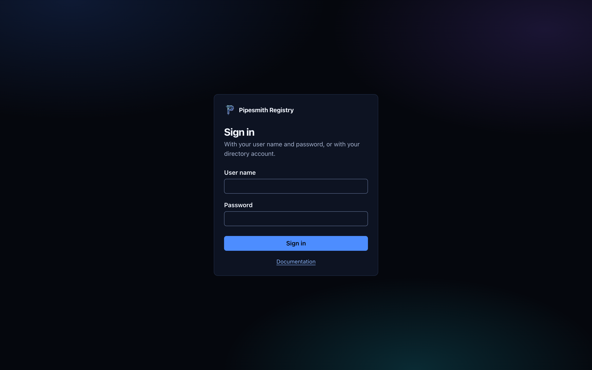
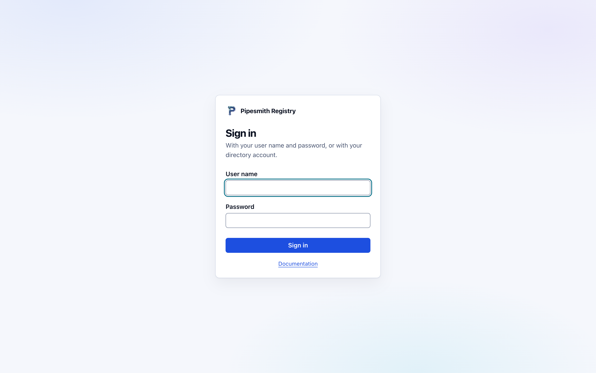
The navigation shows each screen a user may open. A user without the security permissions does not see the Security section; a user with view permissions only sees Overview, Search and Browse.
| Section | Screens |
|---|---|
| Browse | Overview, Search, Browse with the tree of a repository and the detail of a file, the viewer, Upload |
| Repository | Repositories with groups and their members, Blob stores, Cleanup policies, Routing rules |
| Security | Users, Roles, Privileges, LDAP, Realms, Anonymous access |
| System | Tasks, Capabilities, Node, Metrics |
| Support | Status, System information, Logging, Log files |
With writes off the navigation marks the screens this version does not serve with "Not in preview": Upload, Cleanup policies, Routing rules, Tasks, Capabilities, Node, Metrics, System information, Logging and Log files. The interface reads that list after sign in from GET /api/areas. A request that the server refuses with 501 shows "Not in this preview".
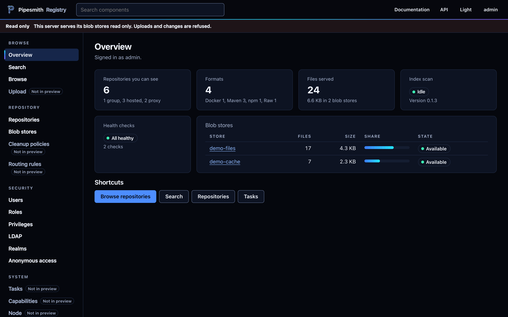
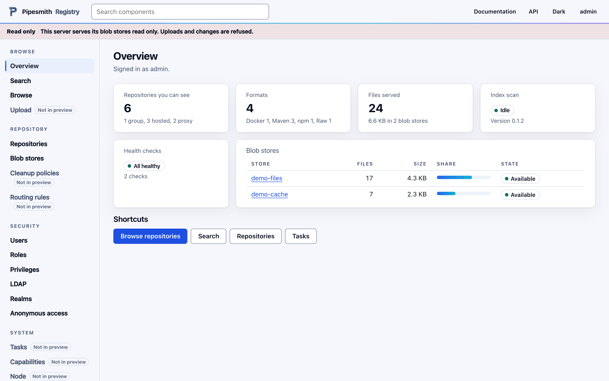
Overview counts the repositories the user can see, their formats, the files served and the blob stores, and shows the state of the index scan and the health checks.
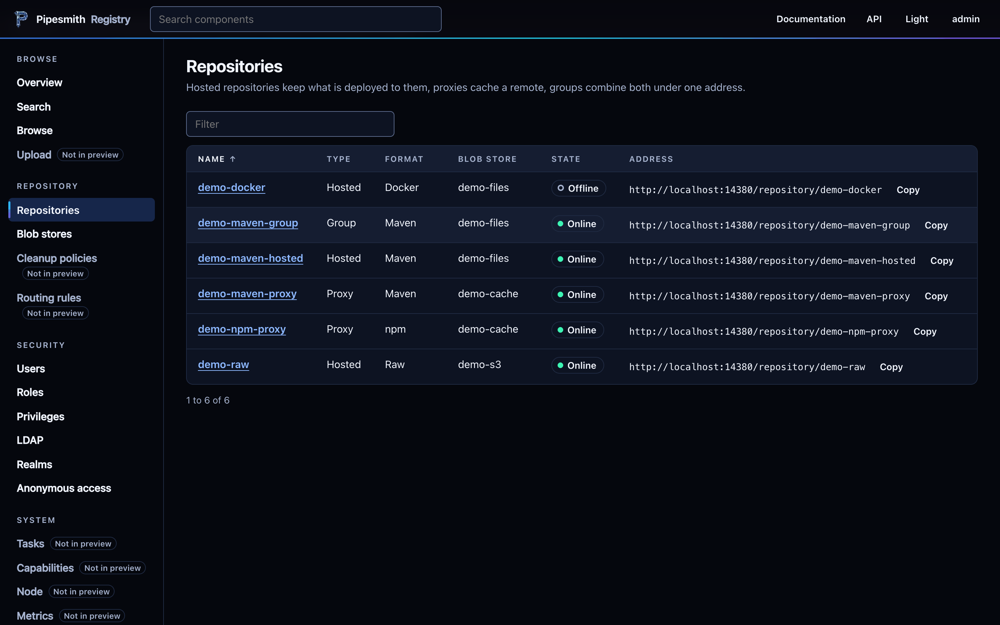
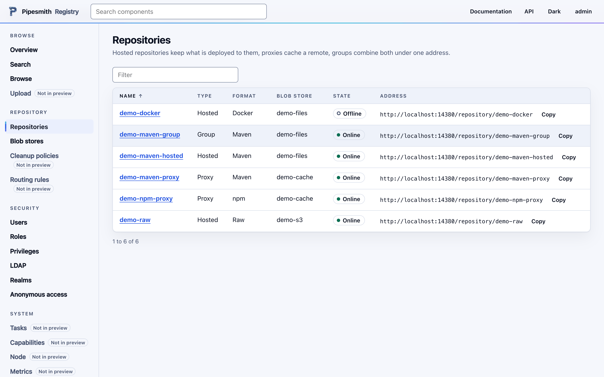
Repositories, in the section Repository, lists each repository with type, format, blob store, state and address, with a button that copies the address. Browse lists the repositories with type, format, files, size and newest file; a group shows "In members" for its counts. A repository opens as a tree with 200 entries per folder and a button for more. A file opens its detail.
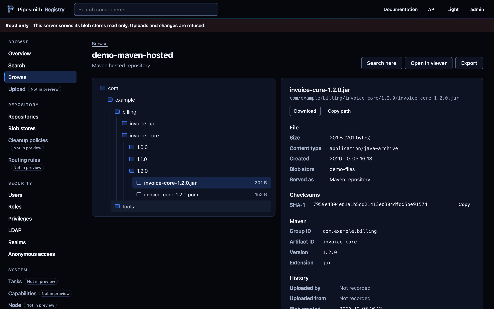
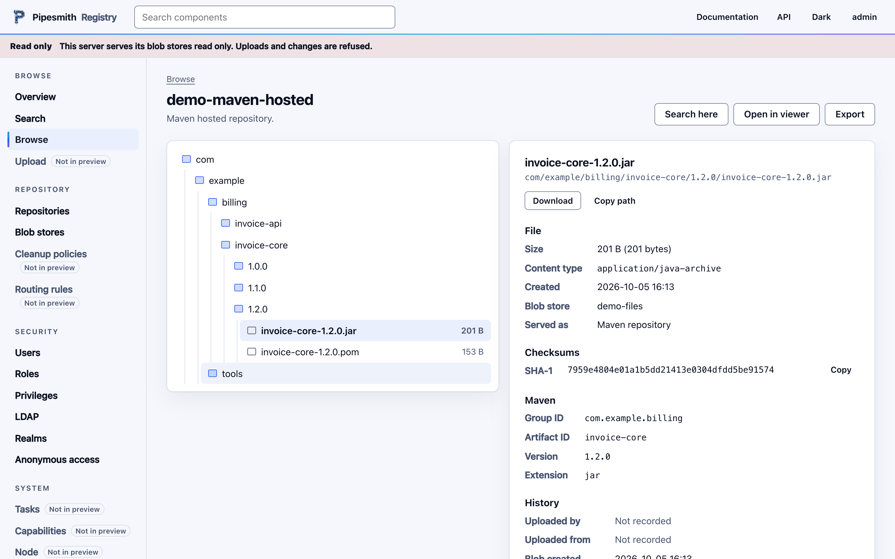
The file detail shows size, content type, creation time, the member that holds the file in a group, the blob store and how the file is served. Of the checksums it shows SHA-1, the only one the index holds. Maven files get group, artifact, version, classifier and extension. npm files get package, version, registry and an install command. Docker files get image, tag, digest and port. A manifest gets a pull command only when its repository has an open Docker port. Upload time, uploader and last download show "Not recorded".
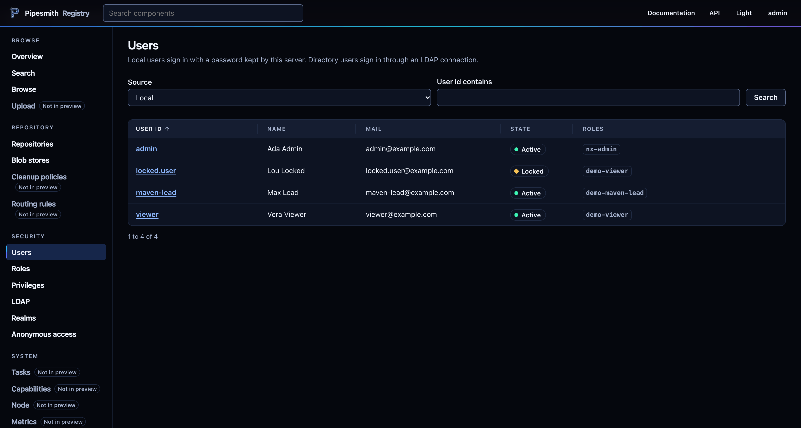
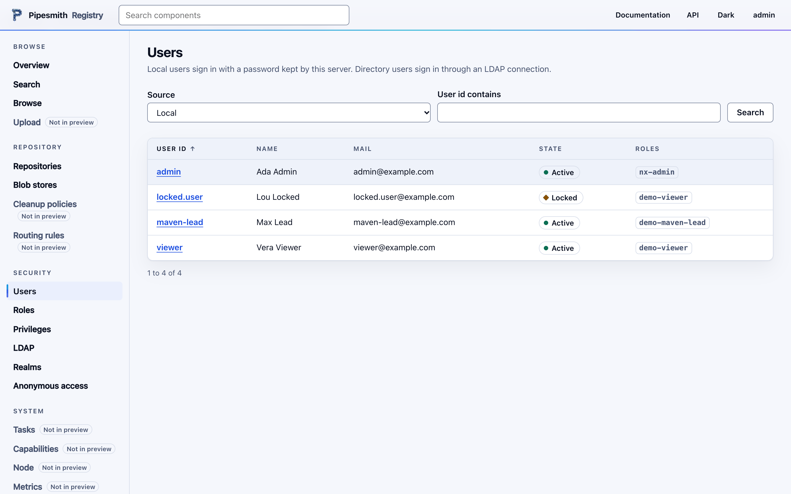
On a wide window the top bar holds the links "Documentation" and "API". They open this manual and the API page in a new tab. The user menu holds both at every width, above About; on a narrow window the top bar hides them. The sign in screen links "Documentation" below its form, before any sign in. The About entry shows the version, the licence and the author.
The server answers this manual at /manual/ and the OpenAPI document at /api/openapi.json without a sign in, with and without state.sqlite. Neither holds any data of the install.
The screenshots show invented data.
Viewer
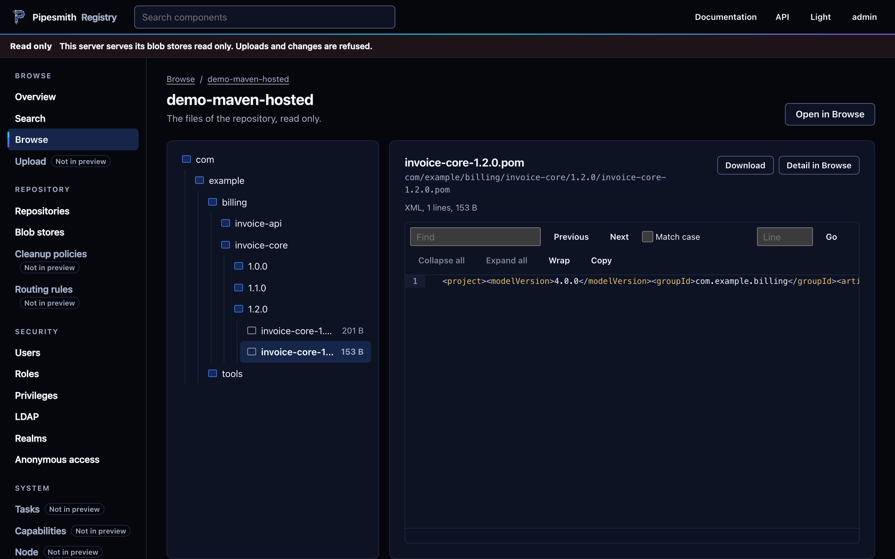
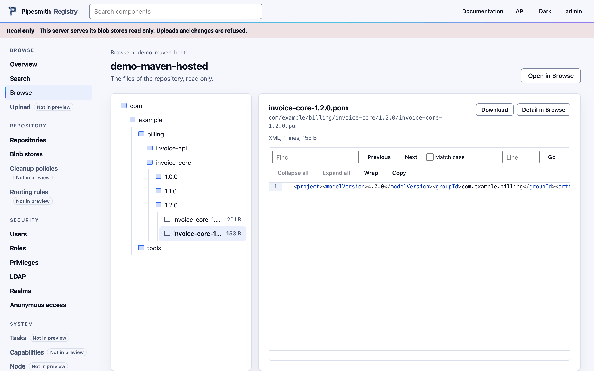
The viewer shows a text file of a repository in the browser. The button Open in viewer is in the head of a repository and in the detail of a folder. The button View is in the detail of a file whose ending the viewer knows, such as xml, pom, json, yaml, properties or md, or whose content type names text.
The viewer reads the file through its download address with GET, so the user needs the read permission of the repository. The viewer changes nothing. It shows at most the first 2 MiB and the first 1,000,000 lines, with the notice "First part only" or "First lines only". A file with a NUL byte in its first 8 KiB shows the card "Binary file", and a refused file shows "The file could not be loaded". In the text you can search, go to a line, fold blocks and copy. Lines wrap in files of up to 5,000 lines.
Export
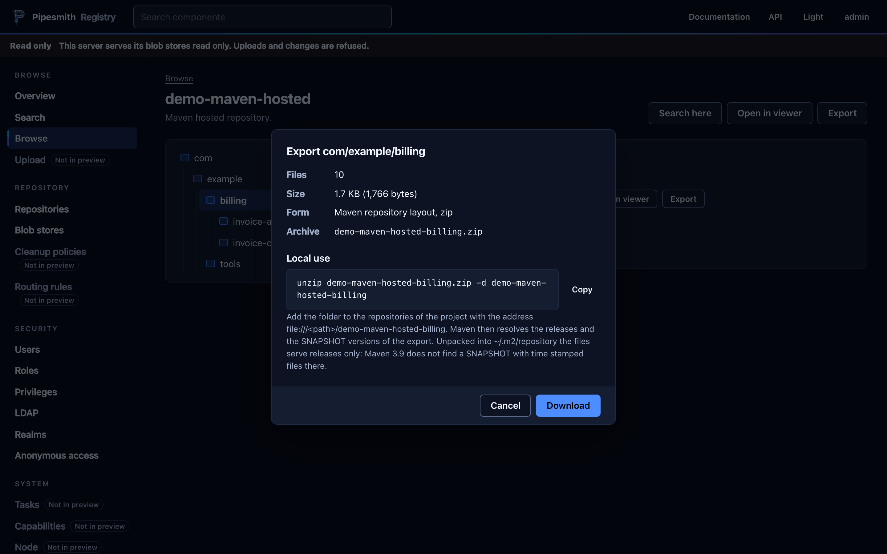
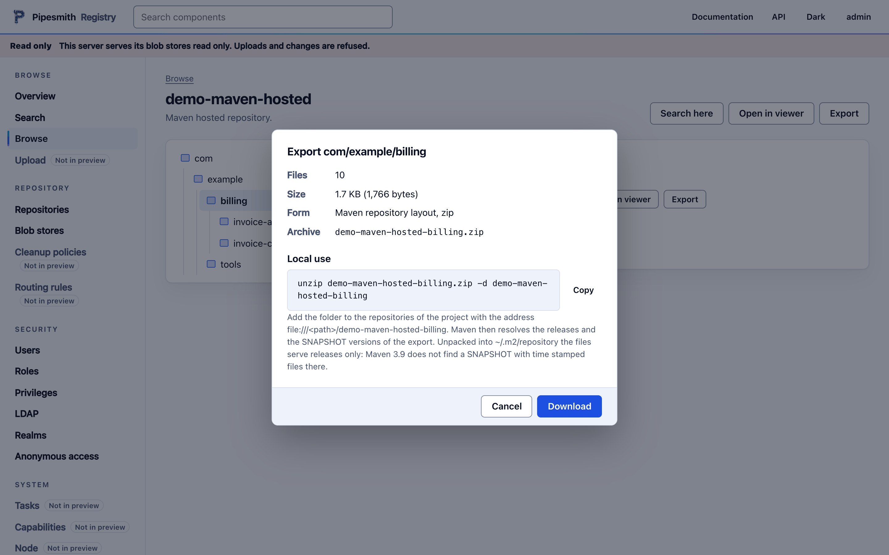
An export sends the files of a folder, or one Docker image, to the browser as one archive. The button Export is in the head of a repository and in the detail of a folder, and in a Docker repository in the detail of a manifest. The button shows for a user with the read permission of the repository. The dialog asks the server first and shows the files, the size, the form and the name of the archive, then offers the download. For a group the dialog shows "about" before the counts, because the archive holds each path once.
The format of the repository decides the form:
| Form | Archive holds | Use |
|---|---|---|
maven (Maven) | A zip of the files below the folder, by their path from the root of the repository | unzip <name> -d <folder>, then the folder as a repository with the address file:///<path>/<folder> |
npm (npm) | A zip of the package tarballs below the folder, as <package>/<file>.tgz | unzip <name> -d <folder>, then npm install ./<folder>/<package>/<package>-<version>.tgz |
oci (Docker) | A tar of one image in OCI image layout | docker load -i <name> |
zip (every other format) | A zip of the files below the folder, by their path below it | unzip <name> -d <folder> |
The archive is named <repository>-<last name of the folder>.zip, with root for the root. An image is named <image>-<tag>.tar, with _ for each / of the image name. As a file:// repository a maven export serves releases and SNAPSHOT versions. Unpacked into ~/.m2/repository it serves releases only, because Maven 3.9 does not find a SNAPSHOT with time stamped files there.
An export holds at most 20,000 files and 2 GiB, counted from the index before the first byte. The server streams two exports at a time, and one per signed in account. An export ends after 2 hours, or when the browser reads nothing for 60 seconds. No setting changes these numbers. An archive that ends early breaks the download, and the browser reports it as failed.
| Status | Message |
|---|---|
400 | the form <form> does not fit repository <name> of format <format>, which exports as <form> |
404 | <folder> is no folder of <repository>, or <folder> holds nothing the form <form> exports |
409 | the stored path "<path>" cannot be an archive entry: <reason>, or the entry "<name>" stands twice in the archive, or as a file beside a folder of its name |
413 | the export holds <n> files and <n> bytes; the limits are 20000 files and 2147483648 bytes, with or more after a count the server stopped early |
429 | two exports stream already; try again in 30 s, or an export of this account streams already: one export at a time per account; try again in 30 s |
The export of a Docker image has messages of its own for 404 and 409.
Search
Search finds components by keyword, coordinates or checksum in the repositories the user may browse. You need a user with the search permission.
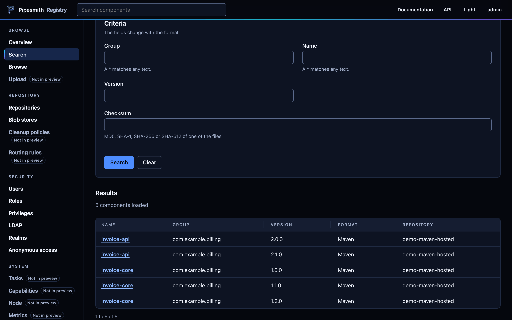
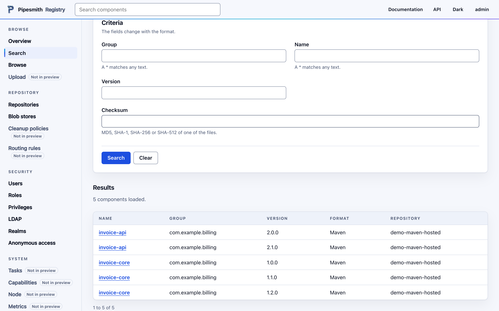
The search screen takes a keyword, a format, a repository, the criteria of the format and a checksum. The address holds the query, so a search can be linked. The results table loads 50 components per request, and a row opens the file in the tree. A component is a Maven version by its coordinates, an npm tarball, a Docker manifest, or for other formats a file by its folder and name. Maven metadata, npm documents and Docker blobs are not components.
The REST route is GET /service/rest/v1/search:
| Parameter | Meaning |
|---|---|
q | Words that must all occur in group, name, version or path; * matches any text; case does not count. |
repository | One repository; a group searches its members under the permission of the group. Without it every repository the caller may browse. |
format, group, name, version, sha1 | Exact criteria of the component |
maven.groupId, maven.artifactId, maven.baseVersion, maven.extension, maven.classifier | Maven coordinates |
docker.imageName, docker.imageTag, npm.scope | Docker and npm criteria; a leading @ of the scope is dropped |
continuationToken | The token of the previous page; it belongs to one query |
Each value may hold 1024 bytes, and each parameter may be given once. An unknown parameter answers 400. A value that is no UTF-8 or holds a NUL byte answers 400 with {"message":"the search parameter <name> is no text: it must be UTF-8 without a NUL byte"}. These parameters answer 501 in this version: md5, sha256, sha512, npm.author, npm.description, npm.keywords, npm.license, docker.layerId, docker.contentDigest, sort, direction, prerelease, timeout, gavec, lastBlobUpdated. A search that takes longer than 2 minutes answers 503.
curl -s -u viewer "http://localhost:8793/service/rest/v1/search?q=invoice-core&version=1.2.0"
{"items":[{"id":"ZGVtby1tYXZlbi1ob3N0ZWQ63xp-uJfHV6wepUkFmWMj5A","repository":"demo-maven-hosted","format":"maven2","group":"com.example.billing","name":"invoice-core","version":"1.2.0","assets":[...]}],"continuationToken":null}
curl -s -u viewer "http://localhost:8793/service/rest/v1/search?md5=0123"
{"message":"the search parameter md5 is not available in this server yet","area":"search"}API
A script calls the same routes as the interface. You need state.sqlite for the REST routes and a user with the permissions of the route. Without state.sqlite the operations marked "needs state.sqlite" below do not exist, and no route checks a caller. The operations marked "needs state.sqlite and writes" exist while writes are on (Writes); with writes off they answer 501 with the area content, or 404.
Authentication
A script sends Basic credentials of a local or LDAP user with every request, or a token as Authorization: Bearer <token> (Tokens). The interface signs in with POST /api/session and the JSON body {"username": "...", "password": "..."}, and then sends the cookie pipesmith_session. The answer holds a csrfToken. A write with the cookie must send it in the header X-Pipesmith-Csrf; a write with Basic credentials needs none. DELETE /api/session signs out.
A request without credentials to a protected route gets 401. A signed in user without the permission gets 403. GET /api/status gives a caller without credentials the name and the version only. A signed in caller with the permission blobstores:read gets the full document: data directory, bind, ports, stores with their roots, totals and the scan state. Every other signed in caller gets the same keys, with the data directory, the bind address and the root, repositories and manifest of each store as null. Its list of Docker ports holds the repositories it may browse, and the error of a failed scan is a fixed text. Without state.sqlite every caller gets the full document.
Error Bodies
| Routes | Body of an error |
|---|---|
REST routes below /service/rest/v1/, /api/session, /api/areas | {"message":"..."}, for a refusal also "area" |
/api/repositories, /api/browse/, /api/asset/, /api/scan | {"error":"..."} |
/api/export/ | {"message":"..."}, for some refusals with more fields |
| a path no route knows, a method a path does not offer | {"detail":"Not Found"}, {"detail":"Method Not Allowed"} with Allow |
/repository/ and the browse listings | plain text |
| Docker paths | {"errors": [{"code": "...", "message": "..."}]} |
An operation that this version does not serve answers 501 after sign in:
{"message":"POST /service/rest/v1/security/users is not available in this server yet","area":"security"}Folder Export
GET /api/export/<repository> answers the archive of Export, with the read permission of the repository. path names the folder. An empty path means the root. For oci it names the manifest v2/<image>/manifests/<tag or digest>. form must be the form of the format, which is also the default. platform chooses one platform of a Docker index. dry=1 answers the counts as JSON and sends no archive:
curl -s -u admin "http://localhost:8793/api/export/demo-maven-hosted?path=com/example/billing&dry=1"
{"repository":"demo-maven-hosted","path":"com/example/billing","form":"maven","name":"demo-maven-hosted-billing.zip","files":10,"bytes":1766,"exact":true,"max_files":20000,"max_bytes":2147483648,"busy":false,"own_export":false}
curl -s -u admin -OJ "http://localhost:8793/api/export/demo-maven-hosted?path=com/example/billing"The archive comes with 200, Content-Disposition: attachment and Cache-Control: no-store, and without Content-Length. A transfer that breaks makes curl exit with an error. A refusal is JSON with message; the API page lists them. The server log adds one line per export: export of "demo-maven-hosted" path "com/example/billing" form "maven": 10 files, 1766 bytes, 3 ms.
Operations
The table lists every operation this version serves, read from the OpenAPI document. The API page shows each with its parameters and answers, and openapi.json is the document itself. The binary also answers it at /api/openapi.json.
| Method | Path | What | Who |
|---|
The OpenAPI document could not be loaded. The API page lists the operations.
Examples
curl -u viewer -O http://localhost:8793/repository/demo-maven-hosted/com/example/billing/invoice-core/1.2.0/invoice-core-1.2.0.jar
curl -u viewer "http://localhost:8793/service/rest/v1/search?q=invoice-core"Commands
pipesmith-registry help prints every command; <command> -h prints the options of one. Long options may be shortened to any unique start. Every command reads the data directory of Files.
| Command | Options | Does |
|---|---|---|
serve | --port N: the main port. --bind ADDR: the address of every listener. --server-names NAMES: the names of the Host gate, comma separated. --ask-ldap-password: asks at the terminal for missing bind passwords. --tls-cert FILE, --tls-key FILE: the certificate and the key of every listener, PEM. --writes: turns writes on. | Runs the server in the foreground, with one more listener per Docker repository that has a port. |
store add <name> | --kind: <blob store kind> or directory. --root PATH: the folder of the store. --repos a,b: limits a directory store to these folders. --manifest PATH: gives a directory store SHA-1, content type and creation time. | Attaches a store in config.json. |
store list | Lists the stores with kind, files, size and root; (missing) after a root that is gone. | |
store remove <name> | Detaches a store and drops its rows from the index. | |
scan [<name>] | Scans one store, or all of them and then the write store, into the index and the catalog. | |
repos | --json: prints JSON, with each remote address without user and password. | Lists the repositories with format, type, access, Docker port, files, size, newest file and a note. |
repos port <name> <port|none> | Sets the Docker port of a repository in config.json, or removes it with none. It takes effect at the next start. | |
docker-check <name> | Reads every stored manifest of a Docker repository and lists the blobs and manifests it names that are not in the index. | |
update <release directory> | --root DIR: the install root, default /opt/pipesmith-registry. --allow-downgrade: installs a version that is not higher, or a release without the command schema. --no-catalog-backup: migrates catalog.sqlite without a copy when the space for one is missing; a failed update then leaves the unit stopped. | Checks the release with the trusted key, installs it below releases/, switches current, restarts the unit and waits for its health. Goes back by itself when that fails (Update). |
update --switch <version> | --root, --allow-downgrade, --no-catalog-backup as above. | The same for <root>/releases/<version>. |
update --fetch | --version V: this version in place of the highest. --allow-downgrade: lets V be the running or a lower version. --scheduled: then switches when scheduled_switch is true. --root as above. | Downloads and checks a release into <root>/releases/<version>. Restarts nothing without --scheduled. |
rollback | --root DIR as above. | Switches current back to previous, restarts the unit and waits for its health. |
import-settings <file> | Writes repositories.json from a repository settings export. Credentials are not taken over. | |
import <directory> | --data DIR: the data directory, before the variable. | Checks an export of the old database and writes its records into state.sqlite, its repositories also into repositories.json. |
import-state | --settings FILE: the settings export, required. --data DIR: as above. | Writes the repositories of a settings export into state.sqlite and repositories.json. |
state show | --data DIR: as above. | Prints the counts and records of state.sqlite as JSON, without password hashes, and with addresses and blob store paths without user and password. |
user add <name> | --roles a,b, --first-name F, --last-name L, --email E, --data DIR. | Adds a local user. The password comes from standard input, at a terminal from a prompt without echo. Creates state.sqlite when it is missing. |
user password <name> | --data DIR. | Sets the password of a local user, read the same way. |
user enable <name>, user disable <name> | --data DIR. | Lets a local user sign in again, or stops it from signing in. |
user roles <name> [<role,role>] | --data DIR. | Shows the roles of a local user, or sets them. |
anonymous on, anonymous off | --user ID, --roles a,b (on only), --data DIR. | Lets requests without credentials in as this user with these roles, or asks every request for credentials. |
realms list | --data DIR. | Prints the active realms in their order, then the others. |
realms set <realm,realm> | --default-role ROLE: the role the realm DefaultRole gives every signed in user. --data DIR. | Sets the active realms and their order. |
ldap password <connection> | --data DIR. | Writes the bind password of an LDAP connection to secrets/ of the data directory, read as for user password. |
ldap ca <connection> <file|none> | --data DIR. | Names the file of CA certificates an ldaps connection is verified against besides the system roots, or removes it. |
ldap check [<connection>] | --data DIR. | Connects and binds as serve would, and finds the search base. |
token issue <user> | --kind npm|user, required. --source default|LDAP. --data DIR. | Issues a token and prints it once (Token Commands). |
token list <user> | --source default|LDAP, --data DIR. | Lists the tokens of a user without their secret part. |
token revoke <id> | --data DIR. | Revokes a token by its id, the part between its dots. |
maven rebuild-metadata <repository> | --group G, --artifact A, --version V. | Writes maven-metadata.xml of a hosted maven2 repository and its checksum files again from the files it holds. Needs state.sqlite; refused beside a serve with writes on. |
schema | Prints the schema versions this binary writes, as JSON: {"catalog":2,"state":2}. | |
config | One of: --get KEY, one value (data_dir, bind, port, config_path, index_path, repositories_path). --check, the problems. --json, all as JSON. --docker-ports, one line <port> <repository> per Docker listener of the next start. | Shows the resolved paths and settings. |
version | Prints pipesmith-registry and the version. | |
help | Prints the help. No command, -h and --help do the same. |
The commands of users, anonymous access, realms, LDAP and tokens need no sign in. A change reaches a running serve within about a second.
Exit Codes
Every command exits with 0 when it is done, 1 when it refused or failed, and 2 for wrong usage. A refusal prints error: <text> on standard error; wrong usage adds see: pipesmith-registry help. These cases also exit with 1:
scan, when any store failed. The other stores are scanned.docker-check, when a blob or manifest is missing, a manifest is unreadable, or there is no index yet.config --check, when it printed a problem.state show, withoutstate.sqlite.updateandrollback, when they refused, or when a switch failed and they went back.
config --get with an unknown key exits with 2. serve exits with 0 after SIGTERM or SIGINT. tools/h2export.sh has its own codes: 0 done, 1 failed, 2 usage, 3 refused path, 4 schema mismatch, 5 database cannot be opened.
update with none or two of a release directory, --fetch and --switch, with --version or --scheduled without --fetch, or with --no-catalog-backup and --fetch, exits with 2. update --fetch exits with 0 when no newer version exists.
Files
Data Directory
The data directory is PIPESMITH_REGISTRY_DATA, else ARTIFACT_REPOSITORY_DATA, else the folder data in the parent of the folder that holds the binary. The binary resolves its own symbolic links first. ~ is expanded, and an empty variable counts as unset. import, import-state and state show also take --data, which wins over the variables. The first command that writes creates the folder with mode 0750 before the umask. No command changes the mode of an existing file or folder.
| File | Holds | Written by | Mode |
|---|---|---|---|
config.json | Bind address, port, attached stores, Docker port overrides. Written by hand: writes, tls_cert, tls_key, trusted_proxies. | store add, store remove, repos port | 0600 |
repositories.json | Repository list with format, type, group members and Docker ports | import-settings, import-state, import of a set with repositories | 0600 |
state.sqlite | Users with password hashes, roles, role mappings, privileges, LDAP connections, realms, the anonymous setting, blob store definitions, repositories, token digests | import, import-state, the commands of users, anonymous access, realms, LDAP and tokens; serve writes the last use of a token | 0600 when created |
secrets/ldap-<id> | The bind password of one LDAP connection | ldap password | folder 0700, file 0600 |
stores/local-write/ | The write store (Write Store) | serve with writes on | folders 0750, files 0600 |
index.sqlite | One row per live file of each store | scan, store remove, POST /api/scan, serve with writes on; serve creates it empty when missing | no mode set; 0644 with umask 022 |
catalog.sqlite | The same rows as components and assets, not read yet | scan, POST /api/scan | 0600 |
catalog.sqlite.fill-<random>/ | Staging of a running scan; a later scan removes one older than 24 hours | scan | folder 0700, files 0600 |
state.sqlite.v<n>, catalog.sqlite.v<n> | The file as it was before a migration to a newer schema, state.sqlite.v1 in this version; it stays until an operator moves it away or the way back of update renames it back | the first command that opens a file of an older schema; for catalog.sqlite only when the disk has twice the size of the file free | 0600 |
state.sqlite.failed, catalog.sqlite.failed | A migrated file after the way back of update; it stays until an operator moves it away | update | the mode of the migrated file |
secrets/<token_file> | The token of the fetch stage, read only by update --fetch | the operator | not readable by group or others |
manifests/ | Lookup tables of a directory store with --manifest | the first scan of such a store | folder 0750 |
-wal, -shm beside each SQLite file | The write log of SQLite | SQLite | not set by the binary |
The mode of index.sqlite was read with ls -l after a scan on macOS with umask 022. config.json and repositories.json are written to a temporary file in the same folder and renamed.
Install Root
| Path | Holds | Mode |
|---|---|---|
update.json | The settings of update: trusted_key, data_dir, unit, drain_seconds, health_address, health_tls_cert, channel, limits, timeouts, scheduled_switch | owner of the root or root; not writable by group or others |
the file of trusted_key | The public key that signed SHA256SUMS | as update.json, and so is its folder |
releases/<version>/ | pipesmith-registry, the same file as pipesmith-registry-<os>-<arch>, SHA256SUMS, SHA256SUMS.sigstore.json; after a fetch also sbom.cdx.json | folder 0755, binaries 0755, other files 0644 |
current, previous | Relative links to releases/<version> | |
releases/<version>.partial/ | A fetch in progress; removed when it fails | folder 0700 |
releases/.staging-* | The copy of a running update; the next update removes what a stopped run left |
Ports
The main port is 8793. config.json may set another, PIPESMITH_REGISTRY_PORT (else ARTIFACT_REPOSITORY_PORT) wins over it, and serve --port wins over all. It must lie between 1 and 65535, and port 8791 is refused (port 8791 is reserved on this machine; use --port N). A Docker port comes from repos port first, else from the repository definition. It must lie between 1024 and 65535, differ from the main port and from 8791, and belong to one repository only.
Environment
| Variable | Meaning |
|---|---|
PIPESMITH_REGISTRY_DATA, ARTIFACT_REPOSITORY_DATA | The data directory, first name first. |
PIPESMITH_REGISTRY_PORT, ARTIFACT_REPOSITORY_PORT | The main port; it wins over config.json and loses to serve --port. |
PIPESMITH_REGISTRY_LDAP_PASSWORD_<ID> | The bind password of one LDAP connection; it wins over secrets/ (see LDAP). |
PIPESMITH_REGISTRY_DRAIN | The seconds open requests get after a stop began, 1 to 3600; 5 when unset (Service). |
PIPESMITH_REGISTRY_WRITES | Turns writes on or off; it wins over config.json and loses to serve --writes (see Turn On). |
FORWARDED_ALLOW_IPS | The peers whose X-Forwarded-Proto and X-Forwarded-For count for the access log and the scheme of built addresses; default 127.0.0.1,::1. The throttle and the cookie read trusted_proxies (see Reverse Proxy). |
NOTIFY_SOCKET, WATCHDOG_USEC, WATCHDOG_PID | Set by systemd for the notify protocol and the watchdog. |
HOME | The folder ~ stands for. |
The image sets PIPESMITH_REGISTRY_DATA=/data.
Security
| Topic | This version |
|---|---|
| Blob stores | The stores of the existing install are opened for reading only. A systemd unit can mount them with ReadOnlyPaths=. Writes go into stores/local-write of the data directory, with writes on only. |
| Writes | Off by default. They need state.sqlite, credentials and the action add, edit or delete, also with anonymous access on. A write from a browser page of another origin answers 403. |
| Network | Local addresses only, until state.sqlite holds a user who can sign in, through a local password or an LDAP connection with its realm active, and --server-names names the server. Every request passes the Host gate. A network bind without TLS writes a warning at every start. |
| Public routes | /, /api/health, /api/status (name and version only), /api/openapi.json, /service/rest/v1/status, /service/rest/v1/status/writable, /api/session and the manual need no sign in. The token routes PUT /repository/<repository>/-/user/org.couchdb.user:<user>, GET /repository/<repository>/-/whoami, DELETE /repository/<repository>/-/user/token/<token> and GET /repository/<name>/v2/token pass without a sign in and check the credentials they are given (Tokens). |
| Status | GET /api/status shows the data directory, the bind address and the roots of the stores to a user with the permission blobstores:read only. Other signed in users get these fields as null, and the Docker ports of the repositories they may browse. |
| Remote addresses | Shown without user and password in the REST answers, in repos --json and in state show. The stored definitions keep the address as imported. |
| Maven metadata | One member document of a group merge may be 16 MiB. Its entities expand to 8 MiB at most, its elements nest 1,102 deep at most, and it holds at most 200,000 elements and 200,000 attributes. A document over a bound is left out of the merge. |
| npm archives | The data of one extended header or sparse map stops at 1 MiB, of all headers of one archive at 4 MiB. One archive inflates to 1 GiB at most, one package document to 4 GiB over all its archives. An archive over a bound gives no version. |
| Scan request | A body of POST /api/scan over 64 KiB answers 413. The server reads and drops up to 16 MiB of it first. |
| Manifest program | A .zst manifest is read by zstd from an absolute entry of PATH only. The program gets PATH, HOME, TMPDIR, LANG and LC_ALL of the environment and no other variable. |
| Transport | TLS 1.2 or newer and HTTP/1.1 on every listener with --tls-cert and --tls-key, one certificate for all. Without them plain HTTP; then use an SSH tunnel or a reverse proxy that ends TLS. |
| Behind a reverse proxy | trusted_proxies decides the client address of the throttle and Secure of the session cookie. FORWARDED_ALLOW_IPS decides the client of the access log. Both can set https in the addresses the server builds. |
| Stored files | With state.sqlite, every file answer carries X-Content-Type-Options: nosniff and Content-Security-Policy: sandbox. |
| Tokens | npm and user tokens are kept as the SHA-256 of their secret part and do not expire; revoke them with token revoke. Docker tokens live 300 seconds in memory. Tokens of the old service are refused. |
| Sign in throttle | Counted per pair of lower case user name and client address. After 5 failures the pair waits 2 seconds, and each further failure doubles the wait, up to 15 minutes. There is no limit per address alone, because behind a tunnel every user comes from 127.0.0.1. Behind a proxy of trusted_proxies the address comes from X-Forwarded-For. |
| Sessions | Kept in memory: 30 minutes idle, 12 hours at most, 20 per user. A restart signs everybody out. The cookie pipesmith_session is HttpOnly and SameSite=Strict; it gets Secure on a TLS connection and behind a proxy of trusted_proxies that sends X-Forwarded-Proto: https. A write with the cookie needs the request token. |
| Passwords | A successful Basic check is kept 300 seconds, 10,000 at most, under an HMAC-SHA-256 key of the process; a change of state.sqlite and a restart empty the cache. A refused check takes at least 5 milliseconds and runs a hash for unknown users too. LDAP bind passwords come from the environment, from secrets/ of the data directory or from the terminal, and are never written to the log. |
| Data directory | state.sqlite holds password hashes and token digests and gets mode 0600 when a command creates it. state.sqlite.v1 holds the hashes as they were before the upgrade, mode 0600. secrets/ has mode 0700, its files 0600. The commands create the folder with 0750 and never change an existing mode. Set it to 0700 yourself, as Install does. |
| Export | tools/h2export.sh reads password hashes only with --with-password-hashes, and writes the export with modes 0700 and 0600. |
| Release | Static binaries, SHA256SUMS and SBOMs in SPDX and CycloneDX. The release script signs SHA256SUMS with a key unless it runs with --no-sign; the release notes list the files of each release. |
| Updates | update runs only as the owner of the install root and refuses a root, releases/, update.json or key that group or others can write. It installs a release only when the signature over SHA256SUMS verifies with the key of trusted_key and the binary has its SHA-256. It refuses a key in or below the release directory. It runs the new binary once without a shell and with an empty environment before the switch. |
| Update channel | Only update --fetch asks a host other than the registry itself. Its requests are all GET to the server of update.json, and only when an operator or the timer runs it. They carry no running version, host name or repository data. The token stays in secrets/ of the data directory and goes only to that server, over https or to loopback. |
| Folder export | GET /api/export/ needs the read permission of the repository, as a download does. It refuses a stored path that no archive entry may carry with 409, and writes nothing on the server but its log line. |
| Viewer | Reads files with GET through their download address, at most 2 MiB of each. |
Troubleshooting
Each row starts from what you see: a message of a command, a line of the log or an answer to a client.
| You see | Cause | Do |
|---|---|---|
scan or serve prints warning: the data directory <dir> lies on a <kind> file system; two processes that use the index there at the same time can lose its writes. | The data directory lies on a Docker Desktop share, NFS, SMB or FUSE. | Run one process on it and start scans through the server, or move the data directory to a local Linux file system (Container). |
serve stops with error: [Errno <n>] cannot listen on <address> port <port>: Address already in use | Another process holds the main port or a Docker port, often the old service. | Give the main port with --port, move a Docker port with repos port (Docker Ports). |
serve stops with error: bind address '0.0.0.0' is not local; only 127.0.0.1, localhost, ::1 are allowed until users are imported (import) or added (user add), or an LDAP connection is imported, with its realm active (realms set), then with --server-names NAME[,NAME] | A network bind while nobody in state.sqlite can sign in. | Import the users (Import) or add one with user add, check the active realms with realms list, then bind with --server-names (Network). |
The log holds WARNING pipesmith_registry.security: bind address <bind> is not local and TLS is off: ... | A network bind without TLS. | Start with --tls-cert and --tls-key, or bind to 127.0.0.1 behind a reverse proxy that ends TLS (TLS). |
serve stops with error: TLS needs a certificate and a key: give --tls-cert and --tls-key, or tls_cert and tls_key in config.json | Only one of the two files is given. | Give both, as options or as keys of config.json (TLS). |
serve stops with error: TLS certificate <cert> with key <key>: <reason> | A file is missing or unreadable for the service user, it is no PEM file, or the key does not belong to the certificate. | Check path, owner, mode and pair of both files (TLS). |
The log holds WARNING pipesmith_registry.security: forwarded headers from <address>, which is no trusted proxy: ... | A proxy or a client sends forwarded headers and is not in trusted_proxies. | List the proxy in trusted_proxies of config.json and start the server again (Reverse Proxy). |
serve stops with error: bind address '0.0.0.0' is not local; name this server with --server-names NAME[,NAME] | A network bind without server names. | Add every name and address the clients use to --server-names (Network). |
A client or a browser gets 403 with Forbidden: the Host header does not name this server | The client reached the server under a name that is not localhost, 127.0.0.1, [::1] or a server name. Behind a proxy this is the public name. | Add the name to --server-names and start the server again (Host Gate). |
POST /api/scan answers 403 with {"error":"the Host 'registry.example.com' is not this server"} or {"error":"the header X-Artifact-Repository: 1 is missing"} | The scan request wants the header X-Artifact-Repository: 1 and a Host with the main port. A proxy on port 443 sends the name without that port. | Send the header, or start the scan on the host with scan (Fresh Content). |
POST /api/scan answers 413 with {"error":"the body is larger than 65536 bytes"} | The body is over 64 KiB. The scan request needs {"store": "<name>"} only. | Send the name of the store alone (Fresh Content). |
The log holds WARNING pipesmith_registry.security: LDAP connection <name> left out: <reason> | The connection could not be built, for example because its bind password is missing. The reason names the cause. | Set the variable that the warning names, write the password with ldap password <name>, or start with --ask-ldap-password (LDAP). |
No local user can sign in after an import that printed note: the export holds no password hashes, so no local user can sign in | The export was made without --with-password-hashes. | Export again with --with-password-hashes and import that export (Import). |
A sign in or a client gets 429 with Retry-After | Five or more failed sign ins for the same user name from the same address. | Wait the seconds that Retry-After names, then sign in with the right password (Throttle). |
After a restart of the server the interface shows Your session has ended. Sign in again. | Sessions live in memory, so a restart ends all of them. | Sign in again (Sessions). |
/ shows a page without sign in and without the interface | The data directory holds no state.sqlite. | Import an export of the old database (Import). |
store add stops with error: <root> has no content/ directory, so it is not a file blob store | The root is not the folder of a blob store. | Give the folder that holds content/, or attach a plain tree with --kind directory (Attach). |
scan stops with error: no stores attached; add one with: store add <name> --kind <kind> --root <path> | No store is attached in this data directory. | Attach each blob store, then scan (Attach). |
scan prints error: scan <name> failed, the index keeps its previous rows: <reason> | The store could not be read. One reason is store <name> at <root> holds no files, but the index has <n> rows of it, which points at a disk that is not mounted. | Fix the cause the reason names and scan again (Scan). |
repos shows 0 files for a repository, or prints no repositories; scan a store or run import-settings | No scan yet, the store of the repository is not attached, or the repository is a group, which counts only its own rows. | Attach the store under the name of the existing install and scan it (Compare). |
A file that the old service stored after the last scan answers 404 with Not found | The index holds the files of the last scan. | Scan the store again, by hand or from a timer (Fresh Content). |
import stops with error: <export>/<file> does not have the SHA-256 of the manifest, error: [Errno 2] No such file or directory: '<export>/manifest.json' or error: <export>/manifest.json has version <n>, this binary reads version 1 | A file changed after the export, the path does not name the export folder, or the export comes from another version of the export program. A refused import writes nothing. | Copy the export folder again unchanged, or export again with the tools/h2export.sh of this version (Import). |
docker-check prints <name>:<tag> missing <digest> and exits with 1 | The index has no row for a blob or manifest that a stored manifest names: its store is not attached or not scanned since it was written. | Attach and scan the store that holds it, then run docker-check again (Docker). |
A deploy, npm publish or a Docker push gets 405 with Method not allowed: this server is read only or the registry error UNSUPPORTED | Writes are off, or the repository is a group, a proxy, offline or of a format without writes. | Start serve with writes on (Turn On) and write to a hosted repository. |
serve stops with error: writes need state.sqlite with the users who may write; import them first (import), then start with writes on | Writes are on and the data directory holds no state.sqlite. | Import the users first (Import), then start with writes on. |
A write gets 401 with Authentication required or the registry error UNAUTHORIZED | The client sent no credentials or wrong ones. With writes on every write needs credentials, also with anonymous access on. | Give the client the credentials of a user with add, edit or delete on the repository (Permissions). |
A write gets 403 with requested access to the resource is denied | The user lacks the action the write needs. | Write as a user that holds it, or give the user a role that holds it (Permissions). |
A deploy gets 400 with the repository does not allow updating assets | The write policy is ALLOW_ONCE, and the path exists. | Deploy a new version (Refusals). |
npm login gets 403 with npm tokens are off: the realm NpmToken is not in the active realms | The realm NpmToken is off. | Add it to the active realms with realms set (Realms). |
A command stops with error: the copy <path>/state.sqlite.v1 exists, ... | A copy of an earlier migration lies beside state.sqlite. | Move the copy away while no other process uses the file, then start again (State Schema). |
An earlier binary stops with <file> has schema 2, this binary knows schema 1 | This version migrated state.sqlite. | Use this version, or go back with state.sqlite.v1 (State Schema). |
A REST call gets 501 with {"message":"<method> <path> is not available in this server yet","area":"<area>"} | This version does not serve that operation. | Use the old service for it. The table of API lists the served operations. |
update stops with error: update configuration: cannot read /opt/pipesmith-registry/update.json | The install root is the one of Place, without the layout of update. | Move it into the layout (Update Layout). |
error: install root: /opt/pipesmith-registry/current does not exist; the first release is installed by hand | The install root has no link current. | Put the first release in place by hand (Update Layout). |
error: no trusted public key configured, or error: trusted public key lies in the release directory: <path> | update.json has no trusted_key, or it names a file inside the release directory. | Name a key file outside the release directory in trusted_key (Update Layout). |
error: SHA256SUMS.sigstore.json missing: <path> | The release directory holds no signature. | Download SHA256SUMS.sigstore.json as well. A release without it cannot be installed with update. |
error: signature over SHA256SUMS does not verify with the trusted key | The release was signed with another key, or SHA256SUMS changed. | Download the release again and check the key of trusted_key (Checks). |
error: SHA256SUMS malformed: <name> listed twice | The published SHA256SUMS of 0.1.2 lists names twice. | Install 0.1.2 by hand; update does not install it. |
error: switch to releases/<v> failed: health check failed: no healthy answer with version <v> at <address> within 30s; last: <cause>; went back to releases/<old>, which answers again | The new version did not answer at the address of the health wait. | Read the journal of the unit. When the unit listens on another port than the health wait asks, set health_address (Restart). |
error: ...; went back to releases/<old>, then the way back stopped: <reason> | The way back could not put a data file back, for example a catalog.sqlite migrated with --no-catalog-backup. | The unit is stopped. The reason names the file; put it right, then start the unit (Way Back). |
error: schema: <path> has schema <n>, written by releases/<current>, and releases/<previous> writes schema <m>; rollback changed nothing and restarted nothing; ... | The previous release cannot open the migrated data file. | Stay on the current release (Rollback). |
An export answers 413 with the export holds <n> files and <n> bytes; the limits are 20000 files and 2147483648 bytes | The folder is larger than one export may be. | Export a folder further down (Export). |
An export answers 409 with the stored path "<path>" cannot be an archive entry: <reason> | A stored file has a name that no archive entry may carry. | Download that file on its own, or export a folder without it (Export). |
| The viewer shows "The file could not be loaded" | The server refused the download of the file. | Give the user the read permission of the repository (Viewer). |
Limits
- Writes are off by default. With writes on, only hosted repositories of Maven, npm, Docker and raw take writes, into the one store
stores/local-write. No command sets the policies or limits of a repository. - With writes on, the interface and
GET /service/rest/v1/read-onlystill say that the server is read only. The interface offers no write action then; clients can write. - Deleted and replaced files stay on disk with a delete mark.
- The server does not write
maven-metadata.xmlon a deploy;maven rebuild-metadatadoes. - No Docker schema 1 manifests.
- No proxy or group caching. A proxy repository serves what its store held at the last scan, and nothing is fetched from upstream.
- npm and user tokens do not expire. Docker tokens live 300 seconds in memory and cannot be listed or revoked. No screen of the interface issues tokens.
- Tokens of the old service are not taken over.
- TLS has one certificate for every listener, read at start, TLS 1.2 or newer and HTTP/1.1 only, and no client certificates.
trusted_proxiesis set inconfig.jsononly.- No format logic for PyPI and the other formats besides Maven, npm and Docker: their files are served by path.
- No changes in the administration screens, no task runner, no log files and no log rotation. The log goes to standard error.
updateandrollbackneed systemd and do not apply to a container. No command makes the install root of Update Layout or installs the unit files.updatetrusts the key thattrusted_keynames. The project does not yet publish that key in a second place.rollbackrestores no data file and checks no signature.updatewrites no history and no log line of its own.- The fetch stage reads one package of one owner on one Forgejo server and follows no redirect to another host. It has run only against a local stub, and no update has run on a host.
- The viewer only reads: at most 2 MiB and 1,000,000 lines of a file.
- An export holds at most 20,000 files and 2 GiB, and no setting changes that. It has no resume. A Docker repository exports one image per archive and no folder.
- Search knows SHA-1 only among the checksums and has no sort.
- Answer bodies are described in words in the OpenAPI document of this version; it has no schemas for them.
- Sessions live in memory.
- Files that the old service writes appear after the next scan.
- The unit file of Service, a TLS proxy in front of the server and the container image have not run on a host yet. The released binary runs on a Linux host since version 0.1.1, read only and on a network address. Memory and CPU on a host are not measured.